Страницы авторов "Тёмного леса"
Литературный Кисловодск и окрестности
Пишите нам! temnyjles@narod.ru
Село Бродокалмак находится в 80км на северо-восток от Челябинска, на широте Москвы.
В 1937г. туда сослали мою бабушку Марию Аркадьевну Смушкову с тремя дочерьми: моей маме было 12 лет, а ее сестрам Тане и Любе - 16 и неполных 6; старшие, взрослые, дети Вера и Абрам остались в Москве. Дедушку, Ефима Ильича Рубинштейна, посадили в апреле 36г., дали 5 лет, в апреле 41г. его выпустили и он тоже приехал в Бродокалмак, где они с бабушкой работали в школе до 47г., когда им разрешили переехать в Калужскую область.
Ниже я публикую три главы из воспоминаний моей мамы, относящиеся к этому периоду. Текст имеет несомненный краеведческий интерес; между прочим, в нем увековечены имена некоторых учителей и учеников бродокалмакской школы и некоторых ссыльных; интересно и еще одно свидетельство о сталинских репрессиях, в наиболее мягком их варианте. То, что касается исключительно внутрисемейных дел, я тоже частично сохранил как характеристику эпохи.
В детстве и юности я много слышал о Бродокалмаке от бабушки и мамы, так что могу даже кое-что дополнить.
Бродокалмак - большое село - несколько тысяч жителей; в те годы оно было районным центром, теперь относится к Красноармейскому району, и население постепенно убывает. В начале 30-х годов многих жителей раскулачили, оставалось много пустых домов; один из таких домов предоставили бабушке, когда в 38г. ее приняли на работу в школу. Село стоит на великолепном черноземе; бабушка говорила, ссылаясь на эвакуированного агронома с Украины, что челябинский чернозем лучше украинского. Бабушка развела такой огород, что в старости, во время бессонницы, пыталась вспомнить все произроставшие в нем культуры и никогда не могла вспомнить все (общее число она помнила, но я-то забыл, что-то около сорока). Когда началась война, от этого разнообразия пришлось отказаться в пользу более урожайной картошки; картошки родилось много, но, поскольку это была почти единственная еда, до следующего урожая не хватало, ели крапиву и перекапывали огород в поисках перезимовавших картофелен. Еды стало не хватать уже начиная с Финской войны, и, по словам бабушки, старики стали умирать один за другим.
По пути в ссылку бабушка с детьми задержались на ж/д станции; кто-то из местных сказал: "В Бродокалмак? Ну, это курорт!" Бабушка рассказывала об этом с некоторым сарказмом, видимо, помня свое тогдашнее ощущение; но позже она убедилась, что это действительно так. Она говорила, что Бродокалмак повлиял на нее очень хорошо, "а то я была настоящим синим чулком".
К сожалению, сейчас эти места отравлены радиацией. В послевоенные годы радиоактивные отходы сливали в Течу - реку из бассейна Оби, на которой стоит Бродокалмак. Жителям объявили, чтобы воду из реки не брали, потому что в ней завелась ядовитая пиявка; жители понимали, что какая-то доля правды в этих угрозах есть, но водой из реки поливать огороды продолжали. Потом построили хранилище для радиоактивных отходов, но в 57г. оно взорвалось - авария, сопоставимая с Чернобыльской.
Вспоминая Бродокалмак, бабушка неодобрительно говорила о девочках, не желавших в школе снимать с головы платок; даже в нескольких платках ходили; а особенно - о жующих на уроке жвак - так называли жвачку, очень видимо популярную в тех местах, которую варили из какой-то смолы. Большое положительное влияние, по словам бабушки, оказали на бродокалмакских школьников эвакуированные ленинградцы.
Мы хорошо знаем об альбомах барышен, в которые охотно писал и сам Пушкин. Любопытно, что через сто лет этот обычай докатился до зауральского села: у девочек были альбомы, в которые подруги писали стихи вроде "Белая роза - надежда, красная роза - любовь, желтая роза - измена, она пожелтела от слез". Попадался в этих альбомах и такой стишок: "...И понравился ей покоритель сердец чернобровый красавец Андрей". Мама рассказывала, что однажды она написала кому-то в альбом немножко иначе: "И понравился ей укротитель зверей чернобровый красавец Андрей". А через несколько десятков лет в какой-то, вероятно, повести из уральской жизни встретилаупоминание об этом Андрее - автор недоумевал, почему вдруг укротитель зверей в уральской деревне?!.
... 3 августа [1937г.], в день моего рождения, в пионерлагере появилась Вера. У меня дрогнуло сердце в предчувствии несчастья, когда я внезапно ее увидела. Она рассказала: маму с детьми высылают. Вера приехала за мной, но решать я могу сама, ехать с мамой или оставаться в Москве. Мама прислала для начальника лагеря две записки, на мой выбор: просьбу отпустить меня совсем, если такова моя воля, и просьбу отпустить меня проститься, т.к. мама "надолго" уезжает. Конечно, я совсем не хотела ехать, но не колебалась ни мгновения: обязана.
Вера пошла к начальнику, при ней я была с виду спокойна, как требовала гордость, но отправившись срочно искать кастеляншу, чтобы забрать из камеры хранения чемоданчик, я обливалась слезами (думаю, что носового платка у меня не могло быть, потому что ведь не было карманов). Мне встретилась врач, спросила, почему я плачу. Я ответила: "Нет, вам показалось".
Мы двинулись с Верой в путь. Не помню, прощалась ли я с кем-нибудь, что` при этом говорилось. Скорее всего, предпочла уехать без объяснений. (Между прочим, уже будучи в Бродокалмаке, мама спрашивала в письме бабушку, получила ли она "вещи, забытые Надей в колонии", так мама по старинке называла пионерский лагерь. Но фактически я сознательно не хотела заходить в палату).
Приехали. Около дома встретился дворник Иван Осипович. "Уже вернулась? Ты что ли на месяц уезжала?" Я открыла рот, чтобы ответить, но Вера толкнула меня в бок и сказала: "Ну да, на месяц". Меня в первый раз, но далеко не в последний, поразило стремление скрывать то, что завтра неизбежно станет известным. (Конечно, свойственно это стремление не только нашей семье). Вдобавок я думаю, что Иван Осипович уже и в тот момент все знал. Хотя, лукавства в нем не наблюдалось. Мама, когда родители вернулись наконец в Москву, до конца сохранила с ним добрые отношения. Уже будучи стариком, даже долгожителем, живя в другом конце Москвы, он приезжал в дом помочь по столярной части: ящики для цветов, скамейку для кладбища - все делал, и кладбищенскую ограду красил.
... И вот - послезавтра отъезд.
| 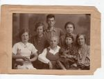 | Таня, Минна Нехемьевна Рубинштейн, Люба, Мария Аркадьевна Смушкова, Надя, Абрам, Вера 4 августа 1937г. |
Накануне отъезда я обнаружила в маминой спальне и прочитала лист, - письмо к Сталину. Конечно, оно не было отправлено и даже не было переписано мамой. Оставшийся в нашем архиве лист и есть тот самый, только уголок оторван. Я думаю, мама сама чувствовала неубедительность написанного.
Привожу как "человеческий документ".
"Дорогой тов.Сталин. Обращаюсь к Вам по личному делу, надеюсь, что Вы прочитаете до конца мое заявление и поможете мне. Дело вот в чем: вчера я получила предписание выехать из Москвы с несовершеннолетними 3 детьми. Старших ребят и мать оставили здесь.
Когда я задала вопрос, за что меня выселяют, то мне ответили, что за то, что мой муж в прошлом году осужден Особым совещанием НКВД за КРД на 5 лет. Обвинение предъявлено по статье 58-14 (саботаж). Муж работал в Когизе, где вообще работа шла очень плохо и где были большие убытки. Ему вменяется в вину то, что он списывал заведомо хорошую литературу в макулатуру. Дело это было еще при Томском. КПК установила, что работа Когиза никуда не годится, и вот для того, чтобы отвести карающую руку от себя, действительных вредителей и негодяев, были подсунуты невиновные люди. Я считаю, что если бы поинтересовался кто этим делом, то оно несомненно было бы пересмотрено, но сейчас дело не в этом.
За мужа сейчас страдаю я, наша семья. Причем тут дети. Страшно подумать, мы попадаем с ними в разряд ссыльных. Вся жизнь ломается, им надо учиться. Меня посылают в Бродокалмакский район Челябинской области, не знаю, есть ли там даже школа-десятилетка.
Я была членом партии с 1919 по 1936 год. В прошлом году меня исключили из партии в связи с осуждением мужа.
(Многоточия оторванного уголка)
Будучи в партии, никогда никаких взысканий...
...работала и боролась за генеральную линию...
...результат - исключение из партии восприняла...
...отрыва мобилизовав всю свою выдержку...
...что честного...
...за собой, т.к. убеждена в том, что он не контрреволюционер. Кроме того, ведь органы НКВД призваны настоящих преступников перековывать, я хотела помочь им, мне нужно было поддержать человека морально, нужно было, чтобы он не стал контрреволюционером в лагере. Я своего добилась. Я видела его, моральное его состояние удовлетворительно. Он жадно воспринимает жизнь, радуется каждому успеху нашей великой родины, он негодует, возмущается вместе со всеми честными гражданами вылазками классового врага, презренных проклятых шпионов и троцкистских предателей.
Я понимаю, что презренные троцкистские двурушники и предатели должны быть выкорчеваны до основания; нужно, чтобы не осталось и охвостья их.
Но даже сейчас, в очень острое и напряженное время, должно быть внимательное и чуткое отношение к человеку, я понимаю, что враг действует очень тонкими методами, но все же его распознать можно.
Неужели только потому, что я жена осужденного, я и моя семья должны быть занесены в разряд вредного элемента, и с нами должны обойтись как с врагом. Очень это обидно и несправедливо. Я боюсь не трудностей ссылки, но я не могу переварить, что я попала во враги, что сейчас, когда наша изумительная родина строится, побивает рекорд за рекордом, когда жизнь становится радостной и счастливой, мои ребята...
...того образования, которое они...
...они попадают в...
...о моральных...".
Вот что осталось от документа. Комментарии, мне кажется, не нужны.
Наступило 4 августа. Через 5 лет в этот день умрет бабушка [Вера федоровна Гар - И.М.], через 20 - родится Игорь [младший сын Н.Е.Миклашевской - И.М.]. А мы в этот день, накануне отъезда, пошли фотографироваться на память. Бабушка не пошла, мама никогда не смогла объяснить мне, почему. Зато пошла бабушка Минна Нехемьевна [Рубинштейн], она очень хороша на этой фотографии. Мне кажется, лучшей ее фотографии я никогда не видела.
Уезжали 5-го вечером. Билеты бесплатные, включая возможность отправить вещи малой скоростью. Приехал провожать Александр Аронович Фридман. Конечно, поступок героический по тем временам. Александр Аронович - муж Веры Григорьевны, младшей сестры Елизаветы Григорьевны Бриллиант, "Лизы", одной из самых старых друзей моего папы. Это в их квартире (коммунальной) на Собачьей Площадке я и родилась.
Когда уже выходили на лестницу, бабушка (не поехавшая на вокзал) втянула меня в комнату и сквозь рыдания сказала: "Береги мамочку, она несчастная, больная". Мама всегда считалась больной, в спальне между оконными рамами (ведь холодильников не было) стояли сливки и прочие атрибуты усиленного питания. Позже мама часто говорила, что жизнь в Бродокалмаке исцелила ее, да это так и было.
Кто еще провожал нас на вокзал, абсолютно не помню. Накануне вернулся из командировки Костя [Константин Аркадьевич Гар, младший брат Марии Аркадьевны Смушковой - И.М.], был встревожен, явно испуган. Я думала тогда, что наш отъезд был для него полной неожиданностью, но теперь знаю, что о вызове в НКВД бабушка успела ему написать, так что хоть немного, но подготовлен он был.
Итак, мы едем. Места боковые. С нами попутчица: довольно молодая и очень красивая женщина Марья Ефимовна, той же судьбы, только бездетная. Позже Таня будет вместе с ней работать (в РайЗУ или РайЗО, районном земельном управлении или земельном отделе, не помню).
Маленькое происшествие: Люба свалилась с верхней полки.
Едем мы не до Челябинска, а немного дальше, до станции Чернявская, туда за нами пришлют машину. В Челябинске обедаем, Любу от непривычной ресторанной еды вырвало. В Чернявской, в домике железнодорожника, жили - ждали машину - несколько дней.
В один из этих дней приехала Евдокия Михайловна Бородкина, тоже из Москвы, с двумя сыновьями, Николаем и Сергеем, иначе их не называл никто, лет по 18-17. Оба высокие, здоровенные, тихие, некрасивые, - но очень приятные, как и их мать. Младшую дочь Валю она оставила в Москве, у родственников. Женщина была простая, работница. Вспоминаю ее на Чернявской: она в недоумении показывает моей маме разломанное пополам крутое яйцо, а мама ей объясняет, что ведь на станциях всегда продают вареные, потому что для пассажиров, а за свежими нужно идти в деревню. Братья Бородкины в Бродокалмаке оба стали работать в МТС (м.б., никто не помнит - это значит машинно-тракторная станция). С семьей Евдокии Михайловны мы, начиная со второго года, когда получили квартиру за рекой, стали довольно близкими соседями. Но знакомство наше продолжалось не очень долго: Евдокия Михайловна сумела перебраться куда-то ближе к Москве.
(А после войны, во время прогулки на теплоходе, наша Таня встретила ее, с незнакомой нам дочерью Валей, - они ехали на встречном теплоходе. Немного успели поговорить. Николай и Сергей оба погибли на войне).
Сохранилось мое письмо к Вере, написанное на Чернявской. Мне невероятных трудов стоило писать письма: я чувствовала себя совсем пришибленной, а письма должны были быть бодрыми, да еще и наивными. Писать Вере - все же было легче, чем бабушке - я выезжала на известном мне интересе Веры к природе ("Здешние крестьяне едят черемуху, крушину, боярышник. Желтая акация в диком виде растет везде". Далее о бабочках, а резюме такое: "Вообще местность хорошая, но бывает лучше". Притом, что кроме Подмосковья, я до тех пор не бывала абсолютно нигде).
Прошло больше недели, и за нами пришла грузовая машина, нас отвезли в Бродокалмак. Мы поселились на несколько дней в "Заезжем доме". Мама стала искать квартиру и работу. Сразу выяснилось, что возможности учиться для Тани нет. Она тоже стала искать работу.
(Средняя школа, как продолжение семилетки, открывалась как раз в том, 1937г., но сначала открывался, конечно, только 8-й класс).
Приведу мамино письмо Е.П.Пешковой, которое Вера "почему-то" не передала по назначению. Теперь оно в моем архиве.
27/IX.
Уважаемая Екатерина Павловна.
Привет Вам из далекого Бродокалмака. Действительность превзошла все ожидания. Нашу жизнь здесь трудно себе представить. Приехала сюда на 12 день. До станции Чернявской ехала 2,5 суток, а 8,5 суток жили на станции и ждали транспорта, который должен был выслать НКВД из Бродокалмака (до Чернявской 40 километров).
Когда в конце концов добрались до Бродокалмака, то оказалось, что и спешить было нечего: работы нет, - нужно искать, - квартир тоже нет. Ходила недели две, пока не устроилась педагогом. Нужно было ездить в область за получением путевки.
С 31 августа начала работать в школе деткоммуны - преподавать немецкий и русский языки. Но не тут-то было! 16-го всех педагогов из переселенных (всего четыре человека) сняли с работы. Говорят, что по распоряжению Облоно, выдавшего 29 августа нам всем путевки! В чем дело? Получено ли было какое-то распоряжение из Москвы, выяснить не удается. Местное НКВД утверждает, что это творчество ОНО, что распоряжения свыше такого нет, что это противоречит политике в этом вопросе, но пока что мы все ходим без работы.
Мне это особенно трудно - ведь на моих руках трое ребят.
Педагогов здесь не хватает, учеба срывается.
Очень прошу Вас, Екатерина Павловна, выяснить этот вопрос, если можно, там в центре. Это одно дело. Другое, тоже очень неприятное, - Вера мне написала, что меня собираются исключать из жилищного кооператива, а мою семью выселять.
Мне кажется, что это незаконно, поскольку я не лишена гражданских прав, меня не имеют права исключить. Отъезд из Москвы не является поводом для исключения меня - ведь семья осталась, а я имею право свою собственность передать кому хочу. Пожалуйста, помогите Вере отстоять свои права.
Очень прошу Вас ее принять и с ней поговорить обо всем. Привет.
М.Смушкова.
Осталось написать несколько слов о моих первых впечатлениях.
Село располагалось вдоль тракта, тянулось на 5-6 км, через него протекала - ныне печально знаменитая - речка Теча; были и боковые улицы, а еще несколько улиц за рекой. Со следующего года мы и жили "в Зареке`", в отдельном доме, потому что мама стала работать учительницей.
Но первый год был очень тяжел. Квартиру-то как раз нашли без труда, близко от Дома приезжих. Во многих домах на оконных стеклах были наклеены бумажки без текста - знак, что сдается комната.
Началась совершенно новая жизнь.
Бродокалмак находится в 80 км от Челябинска. До войны ходил рейсовый автобус, но далеко не всегда, часто приходилось ловить попутную машину, да в оба конца. Во время войны стало еще труднее. Мне довелось однажды ехать в вагончике, прицепленном к трактору, и это было многочасовое путешествие.
Село в основном располагалось вдоль тракта, ведущего в Челябинск (на юго-запад), параллельно текла ныне печально знаменитая речка Теча, в которую в конце 40-х годов спускали радиоактивные отходы.
ПОЗДНЕЙШЕЕ ПРИМЕЧАНИЕ. Родителей моих, а тем более меня, там в это время уже не было. Теперь по телевидению неоднократно показывали отравленную реку и бывших жителей прибрежных деревень - больных. Их отселили, но гораздо позже. А последствия радиации сказались и на детях, рожденных после отселения.
... Центральную часть села жители называли "Калмацкое", еще различались - как в Москве Хамовники, Сокольники и пр. - Пеньково, Чухаревский околоток, Зарека`.
Но это было единое большое село, только Зарека естественно отделялась Течей. Вдоль тракта село растянулось на 5-6 км. По этому тракту вечерами гуляла молодежь. "Ходить по тракту" - это было термином. Говорилось о скромной девушке: "Она по тракту не ходит".
На центральной площади стояли двухэтажные кирпичные здания райкома и других районных учреждений. (Перед ними - коновязь, так как председатели колхозов и прочие сельские руководители приезжали конным транспортом, чаще всего в одноместных "ходкАх", - это двуколки, запряженные одной лошадью и с одной скамейкой. Лошадей в то время было еще довольно много. А слово ходок - мужского рода).
На площади кроме того находились развалины церкви, взорванной еще до нашего приезда, вероятно, в начале 30-х гг. Использовать кирпич оказалось невозможным, такая была прочная кладка.
Интересно, что описывая центральную площадь в письме к бабушке, я писала о трибуне, о братской могиле (красных партизан), а о разрушенной церкви не упомянула, как будто ее и не было. Да ведь и на Остоженке две церкви были при мне снесены. Еще я спрашивала бабушку: "Почему и ты и Вера на конвертах пишете "г.Бродокалмак?" Это не город, а село. Во всем Бродокалмаке всего штук десять двухэтажных домов: мамино РОНО, РайЗУ, парикмахерская (там же помещается швейная мастерская), Райпотребсоюз и еще несколько домов. Трехэтажных нет вообще ни одного. Сам "главный почтамт" это одноэтажный деревянный домишко". (Дело в том, что письма первое время адресовали "г.Бродокалмак, гл.почтамт").
Еще на площади были аптека, районная библиотека, интернат - деревянный дом, в котором жили деревенские школьники из более отдаленных деревень, они уходили по домам в субботу после уроков.
(Города тогда жили по шестидневке, 6,12,18,24 и 30 числа назывались неблагозвучно "общими выходными днями", а сельская местность сохранила семи-дневную неделю, на которую в 1940 году перешли и города: был опубликован указ под названием "О переходе на 8-часовой рабочий день и 7-дневную рабочую неделю").
Этот интернат функционировал по меньшей мере до 1939 года, потому что помню - моя мама иногда в нем дежурила, а работать в школе она начала в 1938. Ближе к военным годам интерната уже не было, стало не до роскоши.
Находились на площади два или даже три магазина, один из них промтоварный. Была столовая (во время войны мы бывали в ней, подавали там груздянку - суп из соленых груздей, а еще "суфле" - жидкость непонятного происхождения, предположительно - из обрата или из молочной сыворотки, с сахарином).
Среда и воскресенье были базарными днями, но и в другие дни иногда за прилавками женщины торговали творогом, молоком - зимой кружочками замороженного. На рынке всегда, даже и не в базарный день, можно было купить глиняную посуду: крынки, корчаги, "ла`тки" (так назывались миски). Маме очень не нравилась манера торговок стоять молча, гордо, не завлекая покупателей: мама сравнивала с хорошо знакомыми ей украинскими базарами.
Кирпичное здание клуба как бы разделяло площадь на две части. Около клуба была волейбольная площадка. Играли только парни. Лишь одно исключение было: на летние каникулы приезжали из Москвы две дочери-студентки первого секретаря райкома. Вот они играли с парнями в волейбол, а местные девушки никогда.
Жилые дома в Бродокалмаке и в окрестных деревнях были изнутри обязательно побелены толстым слоем местной глины. Добывали глину недалеко, километрах в тридцати, привозили в телегах и продавали большими кусками. Дома были бревенчатые, "пятистенки", каждый делился на "избу" и "горницу". Под избой обязательно был погреб, называемый "го`лбец". В избе - русская печь, в горнице - плита или голландка, бывало по-разному. Голландка, как я уже тогда слышала, на самом деле называлась "утермарковская печка", а в быту это слово употреблялось в искаженном виде, а именно - "контрамарка". Это цилиндрическая печь, обитая листовым железом; дверцу топки можно (и нужно) было наглухо завинчивать, благодаря чему печи эти были чрезвычайно экономичны и долго держали тепло.
Почти у каждого хозяина в огороде стояла черная баня. Черная, то есть без трубы, - дым выходил через открытую дверь. Стены, естественно, были изнутри покрыты толстым блестящим слоем сажи. Мы мылись в хозяйской бане, а когда вселились в отдельный дом, то у соседки.
Первая же проба привела к тому, что Люба отказалась заходить в баню, а когда ее уговорили - вошла и тут же выскочила голая на огород, спряталась в картофельной ботве. Пришлось снова долго ее уговаривать. Люба отвечала, что в бане душно. И в самом деле, в банях люди нередко угорали. (Конечно, угорали и в домах; и гораздо позже это бывало, и не только на Урале. Лет через 40 после описываемых событий насмерть угорел однокурсник Игоря, приехавший на выходные дни в подмосковную деревню).
Найти квартиру не составляло труда. На окнах многих домов были приклеены белые бумажки, как будто объявления о сдаче комнаты, а на самом деле чистые, но имеющие тот же смысл. Мама хотела для себя отдельную комнатку. Удалось даже и это. Правда, комнатка эта была неотапливаемая, сырая, но мама стоически прожила в ней зиму. (Я писала бабушке, которой по ее просьбе послала план квартиры: "Ты пишешь, что квартира тебе не понравилась. Но ведь эта квартира одна из самых лучших во всем Бродокалмаке. Двух комнат нет нигде, да и одна только большая больше почти всех комнат в Бродокалмаке. Правда есть один недостаток очень существенный, однако на плане его изобразить..." - на этом обрывается сохранившаяся часть письма. Конечно, я теперь не помню, что имела в виду.
ПОЗДНЕЙШЕЕ примечание. В письмах бабушке я никогда от правды не отклонялась. Но назвать их искренними я никак не могу. Отношения мои с бабушкой были весьма далекими, и "раскрывать душу" я не хотела и не могла. Да и вообще я была скрытной, и это осталось на многие годы.
Хозяин, Сергей Степанович Чухарев, работал возчиком. Производил он очень приятное впечатление: немногословный, всегда чем-то занятый. Хозяйка, Фекла, была баба довольно вздорная, 10-летний Митька потихоньку вредил, оба подворовывали, и мама была недовольна квартирой. Но уже был куплен и спущен в погреб запас картошки на зиму, а это сильно осложнило бы переезд куда-либо.
Среди зимы я писала Вере: "Дрова у нас уже кончаются. Можно, хотя и с трудом, достать в районо две лошади или можно одну и на месте достать кубометра два. (Сейчас я не могу отчетливо понять этих слов, - Н.М.). Тогда хватит надолго. Один раз дров подтаяло слишком много, и у Тани с хозяйкой вышел, мягко выражаясь, спор, или, иначе говоря, скандал. Дрова, должно быть, таскает не хозяйка, а мальчишки, которых хозяйка посылает рубить. Им лень, и после этого они сами сказали, что одно полено брали. Конечно, они брали не одно и не два".
Впрочем, весной Фекла нам отказала, а мы были этому рады.
Замечу, что маму она звала "Маша-а!!!", чем очень ее шокировала.
Однако, отношения сохранились добрые: через 2-3 года мама писала Вере, что Фекла прибежала к ней в школу ("сообразила, что я не дома!") сообщить, что продают в ее конце тракта муку, - привезли из какого-то колхоза. Это было в то время уже редкостью. Мы уже слегка голодали. (Термин этот теперь, когда мы знаем о ленинградской блокаде, не надо бы употреблять, но тогда произносили это слово свободно).
Чухаревых в Бродокалмаке было много. Вообще, меня поразило огромное число однофамильцев: Уфимцевых, Усольцевых, Пановых, Попковых (не Поповых)...
В нашем 5-м классе, например, было две Мани Уфимцевы, не родственницы. Когда мы получили квартиру (отдельный дом) за рекой, то обеих наших непосредственных соседок справа и слева звали одинаково: Паня Бабина. Одну из них, впрочем, чаще уважительно называли Прасковьей Аркадьевной (хотя имя Аркадий никак не принадлежало к распространенным, ни одного Аркадия я не встречала).
Уже в один из первых дней я услышала сзади: "Трактистка! Троцкистка!"
Я сжалась и не могла понять Марию Ефимовну, когда она о таких же выкриках в ее адрес рассказывала со смехом. У Солженицына много позже я прочитала, что местных жителей так и подготавливали: привезут к вам, мол, троцкистов, будьте бдительны.
Мама должна была раз в неделю ходить в райотдел НКВД - "отмечаться".
Врастали в новую жизнь мы медленно, а я особенно. Даже лексиконы различались. Помню, мама говорила одной соседке (не самой ближней), что у нее четыре дочки. Соседка сказала с уважением: "О, ты богатая!" Но выяснилось, что мама имела в виду дочерей, а собеседница - свиней. Их так принято было называть: дочки. Очень выразительно называли лохмотья, вообще ветхую одежду: ремки`. Одно слово мама взяла на вооружение: голи`мый. Не буду пытаться найти эквивалент, а приведу пример. Уже в последние годы жизни, когда Люба пересаливала пищу, мама говорила: "Голимая соль, - как говорили в Бродокалмаке".
А вместо "недосоленное" или "без соли" говорилось - не с солью. Понятие "пакости`ть", с таким именно ударением, имело узкое применение: это значило воровать по мелочам.
Еще примеры: вместо "умереть" говорилось "замереть". Вместо "любовник" - "модник". Великолепному слову "тожно`" не существует аналога в литературном языке; оно обозначает "только сейчас" и употребляется часто с укоризненным оттенком, дескать, "что же ты до сих пор не сделал". Ударение на втором слоге, но первое О тоже звучит отчетливо, по-уральски. Когда я училась в 7-м классе, у нас преподавал военное дело Николай Павлович Усольцев. В начале урока дежурный должен был рапортовать ему при входе в класс. Однажды я дежурила, но в последний момент Генка Трошин грубо меня оттолкнул и занял мое место. Это объяснялось тем, что мальчикам разрешалось рапортовать в шапке, при этом они брали под козырек и это им нравилось. На этот раз Генка от спешки забыл подать предварительную команду и лишь отдав рапорт скомандовал классу "Смирно". Николай Павлович улыбнулся доброй улыбкой и спросил: "Тожно?"
Глагол "уходить" употреблялся не только в общепринятом значении, но и вместо "входить", а именно: "в ведро уйдет 10 кружек".
Очень яркое слово "базлать" означало "громко орать" (я бы охотно ввела его в свой лексикон, да ведь объяснять придется), но тут есть специфический оттенок.
Цветы в горшках называли "садами". Опять же это лучше, чем безликое "цветы", которое мы применяем даже к тем растениям, которые в принципе не цветут.
Еще одно воспоминание. Позже, года через 2-3, мы "проходили" по литературе "Сказку о Соколе" Горького. И вот на перемене дежурный попросил всех выйти из класса, чтобы как следует проветрить (дело было зимой). Одна девочка наотрез отказалась: "НАшто, мне и здесь хорошо. Тепло и сыро". Последние слова как раз цитата из "речи" ужа, обращенной к соколу: "Мне здесь прекрасно, тепло и сыро". А "на`што" было очень употребительным словом, как-то происшедшим из "на что?", в смысле "зачем".
Хорошо помню, что женщины желали тем, кого встречали у реки со стиркой или полосканием белья, - "беле`но чередиться" (произносилось через ё). Кроме этого пожелания, слово "чередиться", кажется, не употреблялось, и только теперь я его нашла у Даля. В разных говорах оно имеет разное значение, в в том числе с пометой "пермское" - именно стирать, убирать, наводить чистоту.
Помню, что картошку никогда не называли картошкой, а всегда "картовь". Уже в военное время слышала, как сетовали колхозницы: "С картови кого наешь". Они имели в виду, что без хлеба и мяса не будет сил для работы, наша же дура-учительница Раиса Исаковна вставила тут реплику: "Мальчика и девочку". Ей казалось, что она остроумно высмеивает употребление "кого" вместо "чего".
Перочинный нож называли не иначе как "складень", "складешок".
Одно из первых школьных впечатлений: учитель просит закрыть окно в классе, а Шурка Ваторопин негромко говорит дежурному: "С понтом закрывай!" Я подумала, что так называют шпингалет: спонт. Но через минуту догадалась, что "с понтом" значит "понарошку". Видимо, слово из блатного лексикона.
Конечно, всех поражало, что мы ходим просто гулять. Через год для таких прогулок даже и компания бывала из местных учительниц или даже молодых учителей. В основном, компания для приезжавшей Веры. Помню прогулку с инспекторшей РОНО (отдела народного образования) Тамарой Ивановной. Вера резвилась. Побежала сорвать какой-то цветок. Мама сказала извиняющимся тоном: "Как маленькая". Инспекторша возразила: "Я бы в ее возрасте тоже побежала". Таня бы не побежала. И сейчас, написав это, я вдруг сообразила: Таню я вообще почти не помню участвующей в прогулках, по крайней мере в компании.
Зимой, когда бывала на реке наледь (после того, как спускали воду с мельницы), я каталась на коньках - в полном одиночестве.
Первый год был очень тяжел, но мама была исключительно стойким человеком.
Вот ее, вероятно первое из Бродокалмака, письмо бабушке.
"Вот уже восемь дней живем в Бродокалмаке. Нашли квартиру, перебрались из заезжего дома... Удручает то, что до сих пор без работы. С работой перспективы пока неясны. Думала устроиться педагогом, педагоги очень нужны, но есть "но"... Думаю, что все же устроюсь. С питанием средне. Оно резко изменилось по сравнению с Москвой - потребляем в основном молочные продукты, тк мясо дорого - 8 руб. кило, крупы никакой почти, яйца 5 руб. десяток. Цены нагнали приехавшие москвичи. Здесь очень большой урожай, т.ч. осенью говорят все будет дешевле. Кое-что пока нужно прислать нам. Беда с Любой - плохо ест, не желает пить молока, не ест хлеба. Хлеба такого, как в Москве, здесь нет. Есть так называемый пеклеваный, стоит 2руб.50к., и бывает белый, который стоит 2.80 и 4.20, а по качеству приближается к московскому за 1.70. Никаких колбас, консервов, а она ведь охотно ела хлеб со всякой такой штукой. Прошу возможно скорее выслать небольшую посылку. Нужны нам: картофельная мука (если нет в магазинах, купите на рынке 2-3 стакана), саго, пшено (если есть), ячневая крупа, чечевица, рис, немного изюма (полкило). Очень нужны из вещей ножницы (я забыла свои и потеряла в дороге ногтевые), РУКОМОЙНИК. Ты его так и забыла положить, а без рукомойника Надя и Люба приучаются к неряшеству... Очень страдаю без газет и книг... Очень интересует меня вопрос с квартирой. Вообще как у вас сложился быт? Как ребята с экзаменами? Кто из них выдержал? Работают ли?..".
Вот тоже из первых писем.
"... Стараюсь не поддаваться мрачным настроениям, но это нелегко, тк перспектив не видно совершенно. Бытовые неполадки меня не угнетают - живут ведь люди. Угнетает мое положение с вынужденной безработицей, с неясными перспективами...
Между прочим, Надя забыла пионерский галстук. Здесь купить его нельзя, т.ч. нужно прислать. Из промтоваров тут кое-что бывает. Бывают галоши, которые стоят много дешевле московских, бывает дешевая обувь. Мануфактуры нет".
Маму взяли учительницей в школу детского дома, который находился мало того что за рекой, но еще километрах в трех выше по реке. Однако ходить пришлось недолго: облоно уволило всех ссыльных учителей уже в середине сентября. Мама написала об этом Е.П. ПЕШКОВОЙ. Из письма видно, что мама упорно избегала слова "ссыльные", хотя в письме к Сталину (я думаю, что мама поняла его бесполезность, поэтому и не отправила) употребляла это слово.
Не забуду этого дня никогда. По совпадению, в этот же день было получено письмо от Веры, в котором она сообщала об исключении из комсомола; мы втроем пошли маму встречать, захватив с собой письмо (конечно, еще нераспечатанное).
Идя уже вместе с мамой обратно домой по мостику без перил, Люба упала в реку: у нее закружилась голова от быстрого течения. Река в этом месте была широкая, а потому неглубокая. Мама прыгнула в воду, благополучно схватила Любу, к счастью упавшую с мостика на ту сторону, что выше по течению. Но был сентябрь, уже прохладно, а мама мокрая до пояса, Люба же вообще с ног до головы. Дом далеко. Меня послали к Евдокии Михайловне, жившей существенно ближе, - у большого моста, - предупредить, что придем обсушиться, а затем я принесла туда из дома одежду для мамы и для Любы. Закончилась эта история благополучно, обошлось даже без простуды, только уплыла Любина шляпка. Ее мама видела потом на какой-то девочке.
С Верой тоже скоро обошлось. Но тогда все мы были подавлены.
Вот открытка от 24 сентября (бабушке).
"... С работой вопрос пока не выяснился. Пугает безработица и главное бесперспективная. Сейчас нужно делать запасы на зиму (здесь иначе не проживешь). Нужно купить картофеля, тыкв и т.д. В связи с этим нужны деньги. Но об этом я напишу Вере. Вчера был день Любиного рождения, было безумно грустно... Погода пока у нас стоит совсем теплая, т.ч. ходим в летних платьях. Вчера ходила полоскать белье на речку, вода еще совсем нехолодная. В следующей посылке пришли пожалуйста Танину бумазеевую кофту, она ее как-то умудрилась забыть, мои старые коричневые туфли, починив предварительно, а ботинки мне не нужны".
Вот письмо, написанное маминой рукой как бы от имени Любы.
"Я сижу третий день в постели. Ночью под выходной я проснулась и мне показалось, что в комнате ходит Яша (тут есть такой дурачок, ходит по базару, со всеми здоровается...). Когда Таня хотела меня успокоить, я заревела, что меня Яша тронул рукой... Всю ночь мама клала мне холодный компресс. Утром мама пошла к знакомой докторше. Она пришла, выслушала меня и сказала, что это вероятно от желудка. Я сижу на диэте. Мне купили петушка, очень хорошего, черненького, хозяйский Митька его зарезал, и я кушаю суп. Температура у меня нормальная, и я скоро встану. Мама боялась, что у меня малярия... Я сама умею читать книжки. Прочитала сказку про трех медведей и "Базар". Песню про веселый ветер я не пою. С ребятами совсем не играю, т.к. они не гуляют совсем. Мне тоже скучно гулять... Я очень люблю писать письма, но сама не умею... Телеграмму к рождению я получила и была рада. На рождении было без тебя и всех скучно. Мама мне пекла вертуту с маком и пирог с творогом. Я приглашала на день рождения двух взрослых московских теть, а детей моего возраста из московских тут нет".
"... Получила вчера пять писем: от тебя, Веры, Ефима Ильича 2 и от Мины Нехемьевны. Очень приятно чувствовать, что кто-то помнит, заботится о тебе. Ведь мы здесь так одиноки, так отрезаны от всего мира... Надо сказать, что в общем я держусь неплохо, значительно лучше, чем все остальные здесь. Но временами, конечно, нападает тоска. Сегодня начала работать, радости мало, конечно, работа чисто техническая, дает гроши, берет много времени. Ну да что же делать. Нельзя же жить без денег, ведь ресурсов нет никаких, нельзя проживать последнее, ведь, если понадобится отсюда уезжать, то и выехать будет не с чем, а ведь не на веки же вечные мы попали сюда!
Ты спрашиваешь, что нам нужно? Сейчас из продуктов ничего существенного. Жду ярмарки. Если ничего не достану, попрошу кое-чего прислать. Сейчас конкретно хотелось бы получить рис сечку. По-моему, он выгоден очень.. При случае хотела бы получить зеленое бобриковое пальто для Нади. Тут очень дешево берут за шитье - 20 руб. за пальто, 2-4 р.за платье. М.б., его окрасить в черный цвет. Ты посмотри, не очень ли оно выгорело, если нужно, покрась. Получила ли ты вещи, забытые Надей в колонии? (Мама имеет в виду пионерский лагерь, - Н.М.)...
Уже 11 с половиной часов, а просыпаюсь я чуть свет, хозяева начинают шуметь в 5 с половиной, а то и раньше. Надюша у нас прихворнула, три дня не ходит в школу..."
"... Я надо сказать одно время успокоилась (даже толстеть начала), терпеливо ждала работы, получив же работу воспрянула совсем духом. Совершенно искренне считала, что и здесь можно жить и даже неплохо, отдохнуть от сутолоки московской жизни. Природа здесь хорошая, работы непочатый край, чем не жизнь! Да не тут-то было!! Мне ведь исключительно везет. Стоит чуть-чуть придти в себя, как новый удар, более тяжелый чем предыдущий, валится на меня. Ты знаешь из письма моего к Вере, что меня сняли с работы. Татьяна так и не устроилась, все собиралась.
(Работу Таня искала, но найти было трудно: 16-летняя девочка, городская, нигде не работавшая до того времени).
Теперь мы обе безработные. Таня попробовала было заняться с-х трудом, но безуспешно. Вернувшись с зерносушилки, заявила, что больше туда не пойдет, что очень трудно. Меня не пускает, говорит, что я не выдержу и 2 часов, а надо работать 12. Собираюсь на-днях, если не утрясется со школой (вопрос выясняется по линии НКВД в Челябинске. Возможно, что директива о снятии исходит только от Облоно, тогда возможно, что и восстановят), идти копать картошку. (Платят 5 руб. в день за 12 часов работы). Вообще не знаю, что и делать. Как жить с тремя ребятами без работы. Денег у меня осталось немного, в школе мне заплатили 239 рублей, из привезенных осталось 200 руб., вот и все наши финансы. Нужно в ближайшие же дни думать об их пополнении. Не знаю, чем все это кончится! Мысли одна мрачней другой лезут в голову. Как жить? Полное бессилие, полное отсутствие перспективы. Нужно бы ставить где-то вопрос, хлопотать, но как это делать, не знаю. Писала я три раза Н.К. (Крупской - Н.М.), но ничего от нее не имею. Нужно, чтобы Вера к ней сходила. Я ей об этом писала. Если она и не поможет ничем, можно все же выяснить ситуацию. Нужно бы тебе сходить на Кузнецкий 24 к Екатерине Павловне (Пешковой - Н.М.). Может она скажет, как обстоит дело с работой, есть ли такая директива не допускать к педагогической работе? Нужно что-то делать, иначе мы просто погибнем здесь. Дело не в панике. Я не склонна ей поддаваться, но если к педагогической работе не допустят, просто ложись и умирай, т.к. другой работы, кроме с-х черной работы, которой я не боюсь, но которая мне просто не под силу, здесь никакой другой работы найти нельзя. Без работы ходят десятки людей. Чувствую физически я так плохо себя, что сегодня свалилась с мостков в воду - закружилась голова. (ПРИМЕЧАНИЕ. Что` было фактически, я описала выше совершенно точно. А в мамином письме - версия только для бабушки. - Н.М.)
Если работы не будет, то жить не на что. Что делать с ребятами? Сейчас я уже начинаю жалеть, что взяла их с собой. Школа здесь плохая, т.ч. Надя получит очень мало знаний, а если буду без работы, то ведь и кормить их не смогу. Сейчас мы с Татьяной ломаем голову над тем, как сократить расходы. Но даже на минимальные расходы нужны деньги. До сих пор мы прилично питались, хотя ничего лишнего себе не позволяли - мяса, которое стоит здесь 7-8 руб., мы покупали не чаще, чем раз в неделю по воскресеньям, зато молочных продуктов я старалась дать им вволю, т.к. они стоят здесь сравнительно недорого. Сейчас и на них экономим. Нужно думать о зиме, запасать картофель, дрова и проч. На все нужны деньги. О дровах я не беспокоилась, т.к. думала, что буду работать в школе, а там должны были дать дрова и платить за квартиру. Сейчас мне работа в школе кажется исключительно выгодной с материальной точки зрения, а когда работала, то думала, что количество энергии затрачиваемой на эту работу, не компенсируется зарплатой. Как все относительно! Ну довольно ныть. Письмо вышло невеселым, но иным оно и быть не может! ... Ребята здоровы. Любочка весела, как всегда. Надюша приуныла, но я стараюсь ее и Таню ободрять... Поцелуй Костю. Он очевидно не хочет мне писать? От Абрама тоже не получила ни строчки...".
После увольнения мама и Таня долго искали работу. Наконец, Таню взяли в РайЗУ (земельное управление) копировальщицей, помогла ссыльная Мария Ефимовна, геодезист по профессии, которая приехала одновременно с нами, даже в том же поезде.
Без работы мама ходила долго. Вот письмо бабушке от 25 октября.
"Как-то так складывается, что никак не возьмешься за перо. Несмотря на то, что не работаю, времени свободного нет совсем. Правда, я ведь так устроена, что всегда нахожу себе работу, и здесь ведь быт не налажен, очень много времени поэтому уходит зря. Сейчас вот приходится заниматься утеплением жилища, сбором дров, закладкой запасов на зиму. Самое приготовление пищи занимает тоже немало времени. Утром нужно спешно подготовить все, чтобы успеть сварить в хозяйской печке. Иногда бывает так, что удается приготовить еду на весь день, иногда же, когда нет необходимых продуктов, либо печь недостаточно хорошо вытоплена, приходится топить печь в своей комнате и готовить на ней ужин. В холодные дни приходится топить для обогревания комнаты, и тогда тоже на ней жарим и парим. Едим обычно три раза в день. Основной продукт питания картофель, довольно часто варю тыквенную кашу, варю гречневую кашу (другой крупы тут как правило нет). При случае вышли пшена и картофельной муки. Раз в неделю в воскресенье покупаем мясо. Мясо стоит теперь 6 руб. кило (было дороже), иногда удается купить ливер (бараний целый ливер стоит 5-6 руб., до 2 кило весом), это очень выгодно, - хватает дней на пять. Питаемся средне - не хватает фруктов, стали экономить на молочных продуктах. У Любочки последнее время разладился желудок. На днях желудок дал скачок температуры. Доктор сказал, что нужны витамины, фрукты и рыбий жир. Рыбий жир здесь есть, а с фруктами плохо. Сейчас завезли клюкву, купила пару кило, чтобы был запас. Ты спрашиваешь, как тут с медицинской помощью. Неважно, хотя есть больница, но врачи плохие. Во всех тяжелых случаях они переправляют больных в Челябинск, у больницы есть своя машина для этого. С лекарствами, как ни странно, обстоит дело хорошо, многое можно достать, чего нет и в Москве.
Детский врач есть московский, работает в аптеке фармацевтом". (Это Роза Иосифовна Арштейн. Мамино письмо я продолжу цитировать позже, а сейчас отвлекусь на нее, это была замечательная женщина).
Роза Иосифовна и ее сестра Мария Иосифовна были ближайшими друзьями нашей семьи. Роза Иосифовна лечила всех нас, а по необходимости и воспитывала. Помню, заболела Таня. Роза Иосифовна пришла, осмотрела и послушала ее и между прочим спросила об "стуле". Таня сказала что-то вроде: какой может быть стул, когда я ничего не ем, ему неоткуда взяться. Роза Иосифовна, очень мягкая по манерам, рассердилась: "Ты же культурная девушка, что` ты говоришь!" (т.е. упрекнула Таню в механистичности).
О сестрах Арштейн будет речь впереди, а пока вернусь к маминому письму.
"... Как обстоит дело со всякими моими бумажками, бывшими в ящиках стола и на шкафу? Куда Вера все дела? У меня к тебе просьба - упакуй хорошо мой ковер, который висел в спальне, уложи и занавески, я надеюсь, что когда-нибудь они пригодятся еще... (многоточие мамино, - Н.М.).
В открытке я тебе писала, что Наде необходима шуба. Пожалуйста найди ей спорок для верха и воротник, и нужно купить сатина для подкладки. (У нас был сатин, который Надя приобрела в школе, но его кто-то у нас стащил, а я собиралась сшить из него халат Наде для школы!)". Дальше мама критикует посылки, которые Вера и бабушка посылают: стружки и ящики составляют основной вес. "Любочка разревелась: неужели Вера не могла купить двух конфеток у моссельпромщицы? Вы все же не представляете, как мы здесь живем! Я посылками тоже была расстроена: они ведь стоят дорого, а существенного в них не было ничего!.. Таня работает пока, я еще не устроилась. Никаких хороших перспектив у меня нет. Как будто наклевывается работа на 120 руб. Таня получает тоже только 150 руб. Нельзя здесь прожить вчетвером на 270 руб., особенно учитывая, что квартира стоит 40 руб., да зимой еще дрова нужны. Но выбора нет, здесь много безработных сейчас ходит". Далее мама в завуалированной форме спрашивает, какие квартиры в 41-м доме освободились, "напиши номера". (Освободилось много).
Наконец, мама нашла работу - счетоводом в Челябторге, но скоро ее уволили, потому что она не могла быстро считать. Потом в Районо, тоже счетоводом, на зарплату в 120 руб. Мама пишет в середине ноября бабушке:
"У нас стоят морозы 25-27 градусов, но представь, очень легко их переносить, т.к. погода стоит наредкость тихая, солнечная. На солнце днем даже с крыш капает. Кажется, что февраль месяц. Люба с тех пор как выпал снег очень охотно гуляет. Вчера гуляла часа четыре, а сегодня даже больше. Я хотела было отдать ее в детский сад, но здесь в школе было несколько случаев скарлатины, т.ч. я решила пока не отдавать".
(Я со своей стороны поражаюсь, что Любе не было скучно, и до сих пор завидую ей. А в детский сад ее так и не отдали. - Н.М.).
Таня зарабатывала больше мамы, но зато ей сильно задерживали зарплату. Даже не знаю, полностью ли расплатились с ней в конце концов. Работала она всего четыре месяца, задолжали ей 900 руб., а потом она снова долго искала другую работу.
Веру исключили из комсомола, - за связь с матерью, потерю бдительности. Вера, видимо, подозревала, что мама умалчивает о каких-то своих преступлениях, потому что мама в письмах оправдывалась перед ней: "Я никогда не имела взысканий, не была причастна к уклонам, ничего общего не имела с подлым троцкизмом, наоборот, проводила активную борьбу с троцкистами, засевшими в аппарате Главполитпросвета; Н.К.(Крупская) до конца боролась против моего исключения".
В конце концов, как я уже писала, Веру в комсомоле восстановили.
Письма мамы в Москву первого периода отчаянны: денег не хватает.
Бабушка непрерывно слала посылки, Вера иногда присылала немного денег. Мама пишет бабушке: "Ты пишешь, чтобы я не ограничивала себя в питании. Странные вы люди. Я получаю 120 руб., 40 плачу за квартиру без дров". И далее расчет, сколько остается на питание на четверых. Вывод: нужно 300 руб. в месяц. Вера и бабушка что-то в Москве продавали, но там вскоре понадобились деньги на выкуп квартиры. С трудом, но половину выкупили, продав книги, мраморный умывальник, ковры (дореволюционные, азербайджанские), получив обратно деньги из двух дачных кооперативов. Много лет спустя, незадолго до своей смерти Костя сказал мне, что он тоже помог выкупать квартиру и что у него даже есть расписка от Веры. Кстати, в одном из писем мама писала бабушке: "Передай привет Косте. Он меня знать не хочет?" И дальше:
"Что тебе написать о нашей жизни? Безумно тоскливо! Я до последнего времени как-то крепилась, а теперь такая тоска напала, что не знаю, что с собой делать. Как представлю, что вот в таких условиях м.б. придется прожить несколько лет, то просто жить не хочется! В конце концов за какие такие грехи обречены мы на такую муку. У меня вот все время была надежда, что это ненадолго, что все как-то утрясется. И ты и Вера поддерживали во мне эту уверенность, а теперь вы об этом совсем замолчали... Последнее время мне кажется, что Вера стала от меня отвыкать, письма ее стали реже и суше, а это так больно... К сожалению, я ничем не могу помочь Ефиму Ильичу. Даже материально стало трудно. Одна посылка была у меня заготовлена еще осенью, но здесь до сих пор нет приема посылок. Я тебя просила в прошлом письме узнать на почтамте, принимают ли посылки в КОМИ АССР, и номер распоряжения, и напиши мне поскорее. Пока я собираюсь послать посылку, продукты заготовленные с осени все тают - пропали еще две коробки консервов. Мне так надоело это, что я охотно переменила бы квартиру, но зимой это трудно сделать - придется вытаскивать картофель из подполья, а нам с Таней и так приходится много физически работать... (Дальше о бабушке). Разве можно доводить себя до такого состояния? Нужно меньше работать. Что делает для вас Настя? Ведь стирки стало меньше? Очень плохо, что вы от нее не отделались. Будут у вас осложнения с жилплощадью обязательно!..
Пришли немного сухих грибов, две баночки томата по 90 коп., майонеза и сгущенного молока".
Мама несколько раз повторяет в письмах: Надя схватит туберкулез; туберкулез для Нади гарантирован. Когда это произошло на самом деле, положение было еще тяжелее (шла война), и маме было как-то не до меня: у папы была дистрофия второй степени, сама мама и Вера тоже похудели. Люба еще в 1938г. (знаю из маминого письма Вере, прочитанного мной, естественно, только теперь, после Колиной смерти) однажды спросила маму: а кто еще голодает в Бродокалмаке, кроме нас? Слаба человеческая память: по своим воспоминаниям, до прочтения этих писем, я считала, что голодать мы начали только в 1939 году, когда практически была прекращена свободная продажа хлеба.
Но еще хуже обстояли дела с одеждой. Дело не только и не столько в смене климата. Бабушка прислала спорок, мне недорого сшили "шубу", как называли тогда всякое зимнее пальто; купили валенки. Однако, буквально с первого дня мама пишет: у Нади нет ни одного платья, нет белья, нет обуви; купила ей парусиновые туфли за 19 руб.
То есть не то что я обносилась, а изначально не было ничего, и так уже навсегда осталось. Сыграло некоторую роль и то, что я быстро росла. Помню мамины объяснения соседкам по поводу моих очень коротких платьев: "У нас вообще носят гораздо короче, чем у вас, но у Нади и правда слишком уж короткое".
Однажды мне в спину кричали мальчишки: "Эй, троцкистка, почему у тебя чулки короткие? (Это были гольфы). И платье короткое. А сама до-о-лгая". Для Любы было легче что-то перешить. Что касается Тани, то до отъезда из Москвы ей всегда шили и покупали наравне с Верой, и потому настолько катастрофического положения у нее не было, да она умела и сама как-то о себе позаботиться. Но и Таня писала бабушке весной 1938 года, когда начались жаркие дни: "У меня нет ни одного летнего платья, я не преувеличиваю - ни одного".
Весной в грязь я ходила в ботах, надевая их прямо на чулки. Предназначались эти боты, чтобы носить их на туфли.
Я пошла в школу, Люба паслась около мамы в РайОНО, гуляла. Между прочим, там в траве обильно росли шампиньоны, и никто их не собирал, считая поганками. Мы собирали. А росли они потому, что приезжавшие в районные учреждения колхозные руководители привязывали там своих лошадей, лошади же удобряли почву.
(Учительница биологии А.А.Чернавина позднее рассказала, что когда она на уроке говорила о шампиньонах, один мальчик спросил ее: "Это те поганки, которые Марья Аркадьевна собирает?" - Она вздохнула: "Я вам полчаса объясняю, что это съедобные грибы". Много лет спустя на Николиной Горе домработница Матеранских, Катя говорила мальчику, набравшему шампиньонов: "Ну что, набрал своих поганок?". С пренебрежением, но явно понимая, что никто ими не отравится. Главное - традиция.
Мама работала с 9 утра до ночи. Писала Вере: мне нужно больше работать, а то разложусь. Вот эти слова хорошо характеризуют маму.
Еще в Москву из Княж-Погоста папа ей писал, что столько работать не нужно, не остается сил для себя и ДЛЯ ДЕТЕЙ. А главное, работать много не значит работать продуктивно, так писал папа. Но он не учитывал другую сторону: мама "боялась разложиться", попросту она любила сам процесс любой работы. Я помню, как страдала мама в последние годы жизни, уже почти беспомощная, именно потому, что без работы не видела, для чего жить. Но, конечно, огромная нагрузка в Бродокалмаке была связана и с необходимостью заработка. Уже в первый год, когда работа в детской школе была для нее недоступна, мама стала преподавать в двух школах для взрослых, и это наряду с основной работой.
Школа по контрасту с московской произвела на меня тяжелое впечатление; привыкла я только на следующий год, а подруги появились только в 7 классе.
Жизнь, как и в Москве, состояла только из дома и школы, но была качественно иной. "Общественная работа", которая очень ощущалась в московской школе, выглядела здесь иначе. Мамина просьба прислать из Москвы для меня пионерский галстук была излишней: галстуков не носили, а пионерские сборы (без вожатых, которых и в помине не было) сводились к одному: девочки "готовились" к проблематичным показам художественной самодеятельности. Мальчики в этом не участвовали. Вероятно, это было продолжение традиции, которой придерживались учительницы начальной школы. В 5-м классе учителя этим вообще уже не интересовались.
Соседка моя по парте, Галя Воробьева, дочь какого-то (среднего звена) руководителя, донимала меня: "Это ты Троцкого рисуешь?" - Почему Троцкого? - "Ну как же, твой папа ведь с ним знаком". (Я от скуки рисовала во время урока какие-то профили, это называлось "черкАться": "Надя черкАется, а все равно хорошо выходит", это уж отзыв доброжелательниц).
Учителя были и неплохие, из старых интеллигентов, и совсем негодные. Сестры Чернавины, немного постарше моих родителей, позже с ними надолго, хотя не очень крепко, подружившиеся, были уральские уроженки. Анна Александровна преподавала биологию. Была спокойная и скучная, в противоположность сестре. Ольга Александровна преподавала математику. В нашем классе - только через два года, в 7-м классе. То есть я нарушаю здесь хронологию.
Была Ольга Александровна взбалмошная, взрывная. Мальчишки любили пугать ее, выпустив в классе мышь. Зрелище было впечатляющее: Ольга Александровна вскакивала на стул и визжала. Бывало это не раз, всегда с одинаковым успехом.
В это время к Чернавиным приехал их племянник, очень симпатичный, домашний мальчик Шурик. Он учился классом ниже нас. Моему однокласснику Коле Яковлеву, отличнику и бойкому мальчику - было разрешено дружить с Шуриком, в котором незамужние тетки души не чаяли. И вот однажды на уроке геометрии Коля у доски вполне успешно доказывал теорему, а Ольга Александровна стала необоснованно и страстно к нему придираться. После урока я спросила Колю: "Ты что, с Шурой поссорился?" Спросила в шутку, но попала в точку. Коля, совсем не удивившись моему вопросу, рассказал про вчерашний спор с Шурой из-за какого-то фонарика. Это для характеристики Ольги Александровны.
Что же касается Шурика, он погиб под бомбежкой, не доехав до фронта. Уже в конце войны, потому что был он 1926 года рождения.
А в 5-м классе нам преподавали арифметику непрерывно сменяющиеся учителя. Один, довольно молодой, по фамилии Рудановский; второй, пожилой Краснов, был совместителем, работал где-то бухгалтером.
Кстати, и ботанику вел некто Комлев, явно не учитель по образованию, странный человек, инвалид (без ноги), находящий удовольствие в циничных шутках. Приведу пример. На уроке девочка жалуется: "Григорий Павлович, а чего Стариков ко мне лезет?" Комлев, с соответствующей улыбкой: "КУДА лезет?" Общий смех. Спровоцированный Вена Стариков, приставания которого были совершенно невинные, шепчет, включаясь в игру, предложенную учителем: "Скажи: под юбку!"
Одна девочка рассказала, как в компании мужиков Комлева дразнили: "Гришка-Гришка, где штанишки пп-потерял, пп-потерял". Ему это нравилось. Напоминал он (не внешне) ядовитое насекомое.
Вставка - об именах. Мама обратила мое внимание, что имена детей бывали изысканные: кроме Старикова, в нашем классе был еще один Вениамин; были Геннадии, Лидии. Конечно, играла роль местная мода: например, Сергеев, которых в Москве во все времена пруд пруди, было очень мало. Сокращение имен тоже имело свои особенности: Анастасию чаще всего называли не Настей, а Стюрой. ("Шура" нас не удивляет, а "Стюра" же для нас звучит непривычно, хотя принцип образования совершенно одинаков).
Бывали очень интересные учителя из молодых. Александр Федорович Усольцев, местный, был нашим учителем географии и классным руководителем. Человек был бесспорно талантливый, но очень циничный. Скоро, несмотря на молодость, он был назначен директором школы, в тяжелейшие материально 1939-40 годы поддерживал учителей. Потом воевал. В 1944, освобождая Польшу, писал мне, что "едва не женился на гимназистке" (был он разведен и воспитывал сына Рудика, Рудольфа, про мать которого мы вообще никогда не слышали). Бесспорно талантливый человек, но при этом самодур. Мы между собой называли его "Ведрыч". Многие его рассказы и высказывания я помню до сих пор.
Когда Таня училась в 10 классе, т.е. в 1940 году, я писала в Москву Вере: "У Тани в третьей четверти все отметки отличные, но отличницей она не считается, т.к. у нее "хорошо" по дисциплине. Классрук у них теперь сам Александр Федорович. Он хотел поставить ей "посредственно", но смилостивился. Дело в том, что на уроках сидели представители из детдома, и одна девочка заявила, что Таня тыкалась с кем-то ручкой. Она говорит, что этого не было".
Помню учителя истории Тельканова. Очень молодой, без руки - потерял в результате несчастного случая на охоте. Во время войны, когда других нестарых мужчин вообще не было, его назначили заведующим районо (отдела народного образования). Учителем был неплохим. Мне теперь кажется, что фамилия его свидетельствовала о каком-то нерусском происхождении (вероятно, кажется - по аналогии с Темиркановым?). Во всяком случае, был он не местный и несколько таинственный человек. Не помню отчества, а звали его Леонидом, - тоже совсем не местное имя.
Вообще, молодых учителей-мужчин было в то время немало. Володя Балыков (которого я звала, естественно, по имени-отчеству) учительствовал в какой-то из деревенских школ. Мама привлекла его в наш дом для компании приезжавшей летом Вере: гулять было не с кем.
Один раз при совместной прогулке (Вера, Балыков и я) по Алабужской дороге хозяйская собака Розка, всегда увязывавшаяся за нами, попала в силок, поставленный кем-то недалеко от дороги - на зайца. Розка громко визжала, я и Балыков старались освободить ее, а Вера оставалась на дороге. Видимо, Розкин визг спугнул зайца, он выскочил на дорогу, помчался на Веру и врезался в нее. Вера успела растопырить руки, но, естественно, не смогла зайца удержать. Ее хохот даже испугал меня: она хохотала и не могла остановиться.
О собаках: позже мама завела щеночка, даже "немного породистого", и назвала Джальмой. Имя звучало как женское, что и требовалось, но мама сказала, что когда-то в какой-то книге упоминался индийский принц с этим именем.
Вернусь к тамошней природе.
Не раз приходилось видеть диких коз. Мальчишки-одноклассники, 14-летние (а таких в 5-м классе было немало, например - упомянутый уже Вена Стариков) ходили на охоту с ружьями.
Травы бывали в рост человека. Многие растения были для нас совершенно новыми: например, татарское мыло, цветущее яркокрасными соцветиями. А ведь в Подмосковье красных полевых цветов вообще не бывает. (Много позже, будучи во Львове в гостях у Веры, я увидела красные полевые цветы - это были маки). Новыми для нас были и саранки - местные лилии (и сибирские, как я узнала позже из книги Фраермана "Дикая собака Динго или повесть о первой любви", - книгу помню и сейчас, через много лет). Ранней весной цвели ветреницы, тоже отличающиеся от подмосковных.
Леса были жиденькие, в виде "колков", малых или больших островов среди лугов и полей, чисто лиственные, - березовые, иногда с примесью осины. Кленов, дубов, лип не встречалось нигде.
В качестве новогодних елок привозили из Русской Течи (это село в 25 км от Бродокалмака) сосенки, а ближе не было и сосен. В первую же зиму, несмотря на все трудности, мама устроила дома елку и сама вместе с нами делала елочные игрушки. Я ябедничала в письме к Вере: "Люба ворчит, что ты не прислала картонажных игрушек (следует перечисление): "Маленькая, себе елку устраивает, так самые лучшие игрушки оставила".
Далее я описываю Вере нашу жизнь.
"Сейчас Таня возьмет Любины валенки из починки, и мы пойдем погулять. Пока Люба за неимением валенок прыгает по стульям и призывает кота. Кот от нее бегает, как от чумы, т.к. Люба его мучает безжалостно. Кот этот хозяйский; огромный и жирный, каких я никогда не видала. Жил он недавно на молочной ферме, питался сливками, разжирел, но теперь хозяева его кормят раз в неделю, и один раз он съел кусочек сырой картошки, который я уронила на пол. У хозяев в кухне целый зверинец: теленочек, бычок "Катька", которого Люба называет дядя Катя, ягненок, крольчиха с крольчатами... Все это вполне заменяет радио, которое теперь работает только вечерами. Жаль, что у нас репродуктор, а то Москву совсем перестали передавать".
Нужно прокомментировать предыдущую райскую жизнь кота: замужняя дочь хозяйки, Надя, работала тогда на молочной ферме.
Судьбу "зверинца" я излагаю в одном из следующих писем. Кое-что здесь мне кажется интересным.
"Зверинец наш понемногу разошелся. Сначала ягненка переселили в сарай, потом теленка увезли (он был не хозяйский, а мальчишки, который у них жил; мальчишка живет теперь в коммуне, а там же теленок), кот успел надоесть нам, крольчат мальчишка раздарил, только два остались".
Далее о собаке Розке, а потом просьбы: прислать тетрадей и книг, в том числе - ранней весной! - определитель растений. Вера прислала. Он и сейчас, через 80 лет стоит у меня на полке, и я им пользуюсь. На одной странице отпечаток грязных собачьих лап: это когда-то по открытой книге пробежал Джальмин щенок.
Но вернусь к впечатлениям от природы. Ближе Русской Течи не было и сосен. В густой высоченной траве росла дикая клубника, по-местному глубянка. Женщины ходили за ней с ведрами на коромыслах, а я - с трехлитровым эмалированным кувшином, и приносила его тоже полный, без всякого труда. Иногда ягоды клубники были мягкие и сладкие, но совсем светлые, - если трава была особенно густая. Еще росли дикая черная смородина, дикая вишня на маленьких, по колено человеку, кустиках. Больше всего из других ягод у местного населения ценились черемуха и боярышник, называемый "бояркой". Земляника попадалась очень редко, не в лесу, не на лужайках, а только вдоль дорог.
Из грибов больше всего было груздей, и ценились они больше других. В лес шли "ломать грузди", а березовики, называемые по-местному "обабками", слегка даже презирали. Из соленых грибов варили груздянку.
Кулинария вообще была примитивная. Мама всегда сравнивала ее с разнообразной украинской. Деликатесами были шаньги с черемухой и "кральки" - сдобные кренделечки. В торжественных случаях, когда "пировали" (так и говорилось), лепили пельмени. Для этих случаев обязательно варили брагу.
Садов, даже палисадников, не было абсолютно. "Садами" называли растения в горшках, на подоконниках. Хотя ходили смутные слухи, что в нескольких десятках километров было село, жители которого - эстонцы - успешно выращивали яблони. Однако очевидцев этого никто из нас не видел.
Но вернусь к школе.
Уже в старших классах историю нам преподавала Мария Дмитриевна Комина. Она была молода и после нашего отъезда долго еще работала. Потом, в 70-е годы, прислала как-то Любе свою фотографию. А в 2009 или 2010 по наущению Славы Сторожука [сына Натальи Васильевны Меркушевой (1903-2001), бывшей в ссылке в Бродокалмаке одновременно с М.А.Смушковой - И.М.] я поздравила Марию Дмитриевну с 90-летием длинной телеграммой, подписавшись "Надя Люба Рубинштейн". Мария Дмитриевна откликнулась хорошим и умным письмом, которое меня тронуло и устыдило. Его я ниже привожу.
Так вот, однажды на уроке Мария Дмитриевна назвала Пушкина "великий реакционер".
Каким-то чудом у меня хватило такта на уроке промолчать (это само по себе удивительно, потому что я была очень нахальна, да еще и мама это нахальство поощряла). Я подошла к Марии Дмитриевне позже. Она объяснила, что ведь мы изучаем химию и потому должны знать, что слово реакция означает изменение. Значит, реакционер - тот кто хочет изменить мир, т.е. это и есть почти то же самое, что революционер.
Сейчас я думаю, что ошибки ТАКОГО рода как раз свидетельствуют об уме, который, как известно, вполне может соседствовать с некомпетентностью.
Но это было позже, а пока я попала в буйное общество. Я писала бабушке:
"У нас все время меняются преподаватели русского языка: сначала был историк, он и сейчас преподает историю у нас; потом была другая, бросила наш класс, потому что перегружена, а именно наш, а не другой какой-нибудь, потому что наш считается хуже всех. Третий вообще держался недолго, угодил в "собачий ящик". (Абсолютно не помню, что это значит и почему бабушка должна была это понять - Н.М.). Теперь снова вторая, очень хорошая. (Далее о другом) ... Таня вот уже третий месяц не получает зарплаты. Один работник из земельного отряда ездил в Челябинск, и оказалось, что денег там нет. Обещали все выплатить к первому. Мама работала и счетоводом и статистиком и за полмесяца получила 120 рублей. Теперь статистиком взяли одну нашу знакомую. Теперь мама получает опять только 120 в месяц, а работает столько же, сколько раньше".
На уроках ботаники и немецкого языка творился сущий бедлам, хотя оба учителя тоже были мужчины. О Комлеве я написала. Немецкий же язык вел Николай Михайлович Зырин. Жена его Юлия Федоровна была вполне успешной учительницей в младших классах, он же не был рожден для этой работы. Причем язык он знал отлично. Маршируя по классу, пел песни Спартаковского союза, пытался задавать нам вопросы на немецком языке. Одну песню немножко помню:
| Ich bin ein junger Pionier, | Я юный пионер, | |
| Und uns're Fahn' ist rot', | И наше знамя - красное, | |
| Der roten Fahnen schworen wir | Мы клянемся красному знамени | |
| Die Treue bis zum Tod. | В верности до смерти. | |
| Der Kittel und das rote Tuch - | Китель и красный галстук - | |
| Das ist ein Ehrekleid, genug | Почетная одежда, достаточная | |
| Wohl zu den jungen Kampfer | Вполне для юного борца | |
| Des Proletariats! | Пролетариата! |
Заканчивалась песня восклицанием:
| Hoch der jung' Spartakusbund! | Да здравствует Союз юных спартаковцев! | |
| Hoch Lenin! | Да здравствует Ленин! |
Конечно, что-то я могу и переврать, а что-то в моих текстах ошибочно из-за отсутствия на клавиатуре умлаута, то есть возможности поставить над буквой надлежащие две точки. (Может быть, смогу когда-нибудь показать Мадлен или Тане [Татьяна и Мадлен Пильц - дочь и внучка Абрама Ефимовича Рубинштейна - И.М.], исправят что можно. Но вряд ли. (Однако в 2013 году - показала Тане, и она нашла у меня единственную ошибку).
...Дверь класса Николай Михайлович запирал на палку, воткнутую в дверную ручку, - чтобы не заглянул никто снаружи. Мальчишки носились по классу, в теплое время выскакивали через окна. Классную доску можно было на шарнирах перевернуть обратной стороной - мальчишки приводили ее в горизонтальное положение, и двое качались на ней - во время урока.
Я, как бывало со мной даже и в более поздние годы, не всегда сочувствовала жертвам насмешек. Но Зырину почему-то сочувствовала. Поэтому была рада, что никто из ребят не заметил несообразности в упомянутой песне: китель и пионерский галстук оказались "вполне достаточной" одеждой для пионера. Сам собой напрашивался вопрос о штанах. Но, вероятно, никто не вдумывался, а точнее - для всех текст был просто набором слов, а перевод, хотя и данный учителем в письменном виде, - тоже набором, хотя и понятных слов.
Зырин был типичным чудаком, и преподавать (возможно даже успешно) он мог бы только в самых старших классах.
Кстати, в 2013 году Таня Пильц объяснила мне, что кителем немцы называют не то, что мы, а всякую рабочую грубую одежду.
Хорошо помню самого боевого мальчика - Шурку Ваторопина. (Немного я уже писала о нем). Дошло до его исключения из школы. Из каких-то соображений у нас в классе было устроено собрание, мы должны были проголосовать - за исключение или против, - а Шурка мрачно смотрел и говорил: "Да голосуйте, не бойтесь". Почему-то было видно, что он действительно мстить не будет. И не мстил.
Мальчишки, выясняя между собой, не врет ли кто-нибудь из них, в качестве клятвы восклицали: "Дешевый буду!" Никогда не говорили, как воспитанные московские мальчики, "честное слово".
О некоторых учителях не сохранилось никаких воспоминаний, я с крайним удивлением перечитываю теперь свои письма бабушке и Вере.
Я писала бабушке:
"Второстепенных предметов вообще нет, потому что нет преподавателей. Их не хватает даже на те предметы, которые преподаются. Географ у нас очень хороший, арифметик тоже преподает хорошо, преподавательница русского языка - очень хорошо (а я ее абсолютно не помню - Н.М.), остальные не умеют держать дисциплину... Мы с мамой сейчас занимаемся немецким, т.к. этим ограничиться нельзя, хотя бы потому, что если в будущем году придется учиться в другой школе, то знаний не будет хватать...".
С мамой мы занимались по учебнику для взрослых. Не знаю, из каких соображений. Но мне нравилось. Сейчас, в 2013 году, Игорь заметил, что я занимаюсь на даче этим же довоенным учебником, - с маминым автографом на 1-й странице.
Еще одно воспоминание. Мамины занятия со мной довольно скоро дали плоды и для мамы. Я стала активно помогать ей. Делала наглядные пособия - помню плакаты, иллюстрирующие значение немецких предлогов. Это были картинки, на которых шарик занимал различное положение относительно куба: под, на, справа, позади и т.д. И в первом же году мама стала доверять мне проверку тетрадей. (Диктанты по русскому языку я бесконтрольно проверяла уже в те две недели сентября 1937, когда мама начала было работать в детдоме).
Располагалась школа в двух зданиях. Оба были кирпичные, вполне добротные, хотя одноэтажные. До революции их построило земство для высшего начального училища.
На следующий год ссыльным разрешили работать в школе. Мама в нашей школе стала вести немецкий язык, Надежда Васильевна Полякова - хотя тоже ссыльная, но довольно невежественная, - русский; ныне живущая (написано в 2000 году) долгожительница Наталья Васильевна Меркушева - русский язык в детдоме (жители по привычке называли его коммуной). Был и один мужчина-учитель из ссыльных, он тоже работал в детдоме.
В том же 1938 году в нашу школу направили нескольких молодых учителей - выпускников учительского института, - это были двухгодичные институты на базе девяти классов, поэтому некоторым из новых учителей было всего по 19 лет.
Стало в школе и веселее, и порядка больше, чем в первый год. Правда, один из новых, учитель истории, был скоро уволен с тихим скандалом ("Девочками сильно интересовался", - объяснила мне одноклассница Фея Сухарева, а моя мама подтвердила). Преподавал до этого он просто никак: при отсутствии учебников я всегда хотела бы слушать его объяснения, но это было просто невозможно: рассказ слышали 3-4 интересующихся мальчика, садящихся ради этого на первую парту; на остальных учитель махнул рукой, и шум просто заглушал его голос.
Отвлекусь, чтобы сказать два слова о Фее Сухаревой. Была она детдомовская, но училась с нами, потому что в это время ее взяла к себе тетка. Фея была старше меня, но максимум года на полтора. Однако из 7-го класса ушла по причине беременности. Ее сильный характер и богатый жизненный опыт очень влияли на окружающих. Жизнь в классе она здорово оживляла, а для меня, домашней, была кладезем, из которого я черпала многие знания о жизни. Н.М.Зырин называл ее Фаиной, не признавая подлинного имени, а Фея не желала откликаться на Фаину. Этот тихий конфликт тоже немного оживлял обстановку.
Остальные новые учителя были неплохи, а один даже великолепен. Михаил Степанович Малышев, такой же молодой, учитель химии, приехал с родителями (м.б., только с матерью, не помню) и тремя младшими сестрами, т.е. был фактически главой семьи. Он руководил кружками - драматическим и танцевальным, уроки вел живо, хотя и чисто словесно (из-за бедности школы). Химия у нас начиналась в 7 классе, но мы с подругой, Валей Бородулиной, еще раньше стали обожать Михаила Степановича.
Кстати, именно о Вале Бородулиной, которая ушла после 8-го класса, у меня сохранилось наиболее теплое впечатление. Была она внешне бесхитростна, но очень чутка и тактична. И артистична. Помню исполняемую ей, параллельно с акробатическими упражнениями, песню:
Дальше навстречу герою выбегает сестра:
Тогда еще все было полно гражданской войной, на Урале это чувствовалось сильнее, чем в Москве.
Валя прислала мне (года через два после моего возвращения в Москву) свою фотографию с надписью, я ответила тем же, но на этом кончилось, - а жаль.
Учительница младших классов Вера Ивановна Шерстобитова считалась невестой Михаила Степановича, - но впоследствии с фронта приехала его беременная жена. Всех этих молодых учителей призвали в армию примерно за год до начала войны.
И в следующие годы появлялись новые учителя. В 7 классе у нас была классным руководителем и словесником жена довольно видного районного начальника, из тех, что назначают не из местных деятелей, а присылают СВЫШЕ и часто перебрасывают с места на место. Несколько слов о нем. Однажды я зашла по делу к учительнице домой. Увидела ее мужа, поздоровалась. - "Здравствуй, милая". Я вытаращила на него глаза, удивленная и даже оскорбленная. Такое обращение со мной "простого человека" я сочла бы естественным, но этот! Это было рефлекторно, я не хотела напугать собеседника, - но напугала. Он сразу поправился: "Здравствуйте". Длилась эта сцена несколько секунд, здесь не оправдывается пословица "Скоро сказка сказывается", - "дело" оказалось короче.
Жена его была профессионалом, хотя и не очень эрудированным, а характер имела твердый. Умела "держать класс", умела построить урок. Меня очень не любила, но старалась быть справедливой, и ей это даже удавалось. Не помню, как ее звали, но ясно представляю внешность: английский костюм с юбкой гораздо длиннее, чем тогда носили. Это было не пренебрежение к моде, а именно свой стиль. Слышу голос, диктующий, как "звонкоголосые дети бежат в школу". Конечно, помню свое недоумение по поводу слова "бежат", а учительница - не знаю, усомнилась ли она в своей правоте, но стояла на своем и объясняла мне, что` такое чередование гласных. (Конечно, о чередовании я и так знала).
Очень молодая и красивая Ида Ивановна Скипина вела историю у нас в 7-м классе, а потом дала мне рекомендацию в комсомол. Ее любили больше за мягкость, даже "тихость", и молодость. И на уроках ее почему-то был полный порядок.
Совершенно особым человеком был Николай Павлович Усольцев (не родственник "Ведрыча", фамилия была из самых распространенных). Был он уже в возрасте, три его дочери учились у нас в школе: Люба - в одном классе с нашей Таней, Инна - моя одноклассница, а имени младшей я не помню.
Николай Павлович преподавал нам военное дело. Конечно, заботился о политическом воспитании. Помню, объяснял (отвечая на вопрос), почему в воинском уставе говорится не "враг", а "противник" (потому что солдат - представитель народа и воюет против нас по принуждению).
Николай Павлович не имел образования (вероятно, окончил в армии какие-то курсы), но был по-настоящему интеллигентен, тактичен - и очень советский человек - в лучшем смысле этого слова, потому что оно не должно иметь чисто отрицательного значения.
В 1940 году он участвовал в "освободительном походе": осенью я писала об этом Тане. "Военрук у нас Ник.Павл. Он уже окончательно вернулся. Он был летом в Эстонии, Латвии и Литве - везде побывал".
Во время Отечественной войны он погиб на фронте. Одна из одноклассниц шопотом (тайком от Инны Усольцевой) рассказывала, что видела во сне Николая Павловича, бегущего во главе бойцов в атаку, с гранатой в руках.
Таня поступила во вновь открывшийся 10 класс в 1939, окончила школу и, не спросясь НКВД, уехала поступать в институт. У нее не сообразили при отправке в ссылку отобрать паспорт, поскольку подлежала она "переселению" как несовершеннолетняя дочь мамы, а не сама по себе. В Бродокалмаке же показывать паспорт ей не пришлось.
В московской школе Таня училась плохо (хотя лучше Веры), а в Бродокалмаке на общем фоне оказалась отличницей. Фон был очень слабенький, выделялись только приезжие: Павлик Бабин, хотя и местного происхождения, но старше даже Тани, имевший к тому времени какую-то биографию, и Тоня Попова, с которой Таня подружилась. Впоследствии Тоня изредка бывала у нас на Метростроевской, и до Таниной смерти [в 1957г. - И.М.] и после. Помню приход ее уже в 60-е годы (она жила не в Москве, а в каком-то из недальних городов). Я рассказывала ей о болезни и смерти Тани, а наш 7-летний Игорь развлекал в это время маленького Тониного сына (это Игорь всегда умел прекрасно).
Кроме Павлика Бабина, который на правах старшего вел себя вполне независимо и даже курил вместе с учителями, - в 10 классе было всего два мальчика, Федя Сафонов и Коля Демидов. Этот последний после войны, отвоевав, преподавал в школе военное дело. В Любином классе, представляясь и рассказывая автобиографию (хороший, на мой взгляд, армейский обычай), объявил, что был одноклассником "вот Любиной сестры" (при разности фамилий [Тани (Смушковой) и Любы (Рубинштейн) - И.М.] это было, я думаю, и необязательно).
В 1940 году выпускников-отличников принимали в любой институт без экзаменов. Таня училась сначала в автодорожном, потом перешла в автомеханический. Хорошо помню, как она мучилась сомнениями: куда поступать. Даже на ромашке гадала.
Институт свой Таня не любила, и уже первой осенью мама писала ей: "Ну переходи куда-нибудь, только не бросай учебу. Хоть в плодоовощной". И затем подробный анализ положительных и отрицательных сторон перехода в пединститут. Но война внесла коррективы - Таня перевелась в автомеханический и как-то втянулась.
Вера приезжала каждое лето к нам; мама только и жила ожиданием этих приездов.
В институт (в Тимирязевку, как хотела и осознанно стремилась) Вера тоже поступила в 1940г., ей исполнилось уже 23 года, и училась она упорно, несравненно лучше, чем Таня.
Абрам сдал экзамены в геологоразведочный еще в 1936г., до нашего отъезда, но не был принят. Сдал и в 1937, и "вербовщик" из Свердловского горного института объяснил ему, что в сложившихся обстоятельствах шансы Абрама на поступление в московский институт равны нулю, - и Абрам последовал его совету - уехал в Свердловск.
И до сих пор вспоминает прекрасных (преимущественно ссыльных) профессоров, преподававших в Свердловских институтах, в том числе и в Горном.
Приходилось Абраму очень трудно: в первом семестре он почему-то не получал стипендии, бабушка Минна Нехемьевна посылала ему по 30 руб. в месяц (стипендия была около 100 первое время), приходилось подрабатывать, разгружая вагоны, а он был не очень силен физически. Летом работал вожатым в пионерлагере. (Помня, как он любил возиться во дворе с моими сверстниками, я не сомневаюсь, что и вожатым он был прекрасным).
Иногда удавалось разгружать вагоны не с картошкой, а с яблоками, и это считалось большой удачей.
Позже как отличник получал стипендию 250 руб., но подрабатывать, конечно, все равно приходилось.
После Феклы одно лето мы прожили у других хозяев, Мануйловых. (В Бродокалмаке не спрашивали, "где вы живете?", а "где вы стоите?"). Хозяйка была женщина молчаливая, строгая. Детей у нее было двое: Андрей и Катя, оба возрастом между Таней и мной.
Я писала бабушке о своих школьных успехах, но также о хозяйстве: вылупляются цыплята, Таня поймала ежа. "На ночь мы закрываем ящик крышкой и ставим сверху утюги. Ты писала, что скучно без собаки. К нам переселилась собака старой хозяйки. Она живет у нас под крыльцом. Одна учительница обещала нам щенка..."
Подробнее писала Вере: "Знаешь, мы обзавелись уже настоящим зверинцем. Кроме Любиной Розки нам обещали еще щеночка-полусеттера. Мы с Любой ходили смотреть их. (Следует описание)... Мы возьмем черного, если не раздумает мама. (Дальше о курице и о цыплятах). Теперь у нас есть еж. Таня его поймала, вернее нашла, когда мы ходили последний раз гулять... Еж спал прямо посередине полянки. Таня накрыла его жакетом и понесла домой. Он уже привык к нам, но на руки его еще нельзя брать. Здесь очень много кукушек. Я их несколько раз видела. Они большие, больше сороки, серовато-желтоватые". Далее идут просьбы и извинения за то, что "все письмо из одних просьб".
ДОБАВЛЕНИЕ 2010 года о кукушках (причем удивляюсь: как же раньше этого не написала?) В какой-то из книг Виталия Бианки (кажется) я еще в детстве, до ссылки, прочитала, что редким натуралистам удается увидеть кукушку. Я же видела их даже кукующими, причем не раз. Кстати, видела в конце 80-х годов на даче Кисляковых в Переделкине, из окна своего домика, даже в бинокль рассматривала. Но позже и в Переделкине они стали редкостью: цивилизация наступала и продолжает наступать очень быстро.
К осени 1938 года маму пригласили преподавать в школу и дали казенную квартиру - отдельный дом за рекой, где мы и жили уже до конца. При доме был огород (15 соток чернозема), загон для коровы (корову не в первый год, но мы купили). Разводили кур, даже гусей и уток, но это продолжалось недолго: утята дохли, а гусята хотя и вырастали, но на речке их воровали детдомовцы ("коммунары") и жарили на кострах. Слишком уж близко к детдому мы теперь жили. Впрочем, Поповы - семья Таниной одноклассницы и подруги Тони, о которой я уже упоминала - уток вполне успешно разводили, причем какой-то необычной породы, черно-белых. А мама заводила и овец, и поросенка... Она вообще любила животных.
Жили мы теперь совсем близко к реке Тече. Прекрасная была речка. Еще живя у Мануйловых, мы с Любой купали в речке щенка, которого тогда завели. Дети вокруг удивлялись, что собачка терпеливо выносила мытье, матери объясняли им: "Так приважена". Из щенка выросла хорошая собака. Была она черная с подпалинами, с примесью чего-то от пойнтера. Назвали ее Джальмой, потом она щенилась, и одно время жили у нас две собаки (и кошка). Мне очень нравилось, что когда я иду в лес за хворостом, впереди бегут две собаки. Однажды - мама нам рассказывала - на уроке мальчишка, давясь от хохота, рассказал во всеуслышание, что видел, как "ваша собака" украла на рынке у торговца огромный кусок мяса, за ней погнались, но безуспешно. То есть собаки хотя и жили в доме, но пользовались полнейшей свободой. Джальма исчезла в конце 1939 года, я писала об этом Вере: "Думаю, что ее застрелили на бойне. Она последнее время таскала откуда-то всякую дрянь: кости, бараньи ноги и т.п. Потом она даже мясного супа есть не хотела. Пират растет и становится все более похож на "тихого нищего" - помнишь, такой рыжий трехногий пес к Джальме ходил. Характер у Пиратки безобразный: никогда не лает на чужих, целый день валяется у печки, так что шерсть становится горячей. Он до сих пор не просится на улицу, за ним приходится убирать, а ему уже четыре месяца. Но он красивый, шерсть у него длинная и мягкая".
Пират бегал в общественное стадо и понравился пастуху, тот просил Пирата продать: оказался хорошим помощником. Мама, конечно, отказала. Пират исчез, мы считали, что украл его пастух. Шерсть у него была золотистая, и мама по утрам напевала: "Встань, собачка золотая, у ворот, проводи меня до солнца в огород". Это был ремейк, говоря по-нынешнему, казачьей песни, которую мы часто слышали по радио (там речь шла не о собачке и не об огороде, а о казачке, провожавшей казака на войну: "Проводи меня до солнышка в поход"). Мама же песней торопила меня и Любу идти полоть грядки, потому что в жару это было очень тяжело.
Кроме огорода с картошкой и разными овощами (мама приобрела даже книгу по овощеводству), мы арендовали грядку под капусту у жившего неподалеку Миши-глухого, огород которого спускался к самой речке. Ему выгоднее было самому сажать одну-две грядки капусты, а остальную площадь сдавать соседям. Капуста росла там хорошо, и поливать было легче. Таскать воду в нужном количестве в наш огород было бы немыслимо, даже для хозяйственных нужд из колодца с журавлем было неблизко и тяжело. Я носила ведра в руках, к коромыслу так до конца и не привыкла. Между прочим, в Подмосковье я видела только дугообразные коромысла, а в Бродокалмаке они были только прямые.
Миша-глухой потерял слух на 1-й мировой войне, говорил поэтому не очень внятно, но мы привыкли его понимать. Жил он практически бобылем. К нам заходил нередко, попросить газет на самокрутки ("газетчика", как он говорил).
Электричества в поселке не было, освещались керосином. Первый год было трудно его добывать, но когда мама стала работать в школе, стало с керосином и дровами немного легче - вплоть до начала войны. Однако дома все равно было очень холодно, в первую же зиму пришлось закрыть три окна ставнями наглухо и утеплить. Всегда мы торопились поэтому закрыть трубу после топки печи. Один раз и угорели все: мама и сестры до рвоты, даже у меня немножко болела голова - впервые в жизни.
Керосин бывал не всегда, сидели при свечах, во время войны - при коптилке без стекла: тоже керосиновая, но очень экономная. Все стены и потолки были покрыты копотью. Соседей это, конечно, весьма шокировало.
Близкое знакомство, кроме Натальи Васильевны [Меркушевой] (а она и жила теперь от нас наискосок), мы свели с двумя сестрами, незамужними, попавшими в ссылку из-за ареста брата, от семьи которого даже и жили отдельно, - Розой Иосифовной и Марией Иосифовной Арштейн. Мама в письмах, упоминая о них, писала обычно их инициалы как Р.О. и М.О., упрощенно.
Друг на друга совсем непохожие, они были очень дружны. Я уже немного о них писала.
Роза Иосифовна была врачом, но первый год работала в аптеке провизором. Нас всех лечила, да и в Москве после возвращения тоже. Я вспоминаю ее постоянно. Она вылечила меня летом 1939 года от - предположительно - бруцеллеза. Я заболела в начале лета, во время экзаменов. Болела чуть ли не все лето, с высочайшей температурой, ослабела настолько, что уже встав с постели, не могла самостоятельно подняться на три ступеньки в сенях (это не оговорка, ступеньки были именно внутри сеней, нетрадиционно).
Волосы мои поредели, и после этой болезни я в течение долгого времени, больше года, была кудрява. Это зафиксировано на фотографии, наклеенной в сохранившемся комсомольском билете, и доказывает живучесть ошибочных представлений, если их часто повторяют ("во время тифа ее остригли, и ПОЭТОМУ ее отрастающие волосы вились...". И вот оказалось, что на самом деле после тяжелой болезни могли виться и без стрижки).
Жили сестры Арштейн в доме, выходящем на площадь около клуба. Помню, летом 1940 года мы стоим около окна Розы Иосифовны: Вера, Таня и я. Роза Иосифовна говорит: "Три девушки - три березки".
Мария Иосифовна после войны, перебираясь в Москву, жила у нас какое-то время.
Дружба с сестрами Арштейн продолжалась и в Москве, до их смерти. Роза Иосифовна умерла довольно рано, до этого времени лечила меня, лечила Таню. Считалось, что у Тани она не то не заметила начала туберкулезного процесса, не то не придала должного значения. Но болезнь Тани протекала настолько бурно, настолько нестандартно и настолько не поддавалась никакому лечению, что я думаю - это упрек несправедливый.
... Ссыльных в Бродокалмаке, по нынешней оценке Натальи Васильевны, было десятка полтора-два семей: из Киева, Ростова, но большинство из Москвы.
Никогда я не слышала больше о таком странном способе отправлять в ссылку, как отправили всех нас летом 1937: бесплатная доставка любого количества вещей малой скоростью, уже одно это - дорогое удовольствие для государства.
Это была разовая кампания. Даже Солженицын о ней не упоминает.
Некоторые добивались возвращения, но немногие. Из близких знакомых - никто. Я упоминала Евдокию Михайловну Бородкину, но и она не вернулась в Москву, а просто добилась перевода поближе к Москве.
К Наталье Васильевне приехал, отбыв срок, ее муж - украинский писатель Андрей Антонович Чужий-Сторожук (Чужий - это псевдоним). За неимением других партнеров играл со мной в шахматы. Иногда я даже выигрывала.
Потом приехал к ним их 13-летний сын Слава (Бронислав, - а теперь крещен Николаем). Он воспитывался до тех пор у одной из теток, аккуратно писал матери, а также и отцу, которому мать пересылала письма. Нам она часто их читала.
Спустя время родился второй сын - Алик (Олег). Жила с ними мать Андрея Антоновича, Марфа Васильевна, она и похоронена в Бродокалмаке, на Кошкульской дороге. Слава, будучи как-то в 50-е годы в командировке в Челябинске, специально заехал в Бродокалмак на кладбище, к своей бабушке, - но могилы уже не было.
Сейчас Наталья Васильевна не имеет реабилитационного удостоверения, потому что якобы сослана была только ее свекровь, а Наталья Васильевна поехала за ней добровольно. Слава махнул, наконец, на это рукой: все равно льготы ничтожные. (Однако, позже сумел оформить для себя все документы не как член семьи, а как репрессированный).
Осенью 2003 года оба брата (за счет успешного Алика) совершили поездку в Бродокалмак. Они пробыли там около двух суток, Слава рассказывал мне о своих впечатлениях. Из тех, кто жил там при нас, осталась только Мария Дмитриевна Комина, 87 лет. (Я никогда ее не любила, но нашей Любе она подарила свою фотографию с трогательной надписью, - не помню, в то время, когда Люба еще училась или позже). Позже я попросила у Славы адрес Коминой и поздравила ее с 90-летием длинной телеграммой от своего и Любиного имени (подписалась "Надя Люба Рубинштейн"). И получила от Марии Дмитриевны письмо, которое меня тронуло и заставило стыдиться прошлого, - но что теперь поделаешь.
Дорогие Надюшенька и Любонька!
Пишу, а от волнения духовные силы рассыпаются! Очень радостно получить от вас весточку, я часто вспоминаю военное время, всегда перед глазами Мария Аркадьевна (правильно ли я помню?) и Ефим Ильич. Помню, насколько родители Ваши были интеллигентными, культурными, грамотными, очень уважаемыми всеми как учителя, педагоги, как граждане.
Помню черты лица, их жесты и поведение на уроках. Представляю, что Наденька - образ своего папы, а Любочка - мамы.
Надежда Ефимовна и в 8 классе была не по годам своим очень строгая к себе и окружающей среде, к содержанию уроков преподавателей. Мне было 22 года, как приехала, окончив институт. Работала в 3 смены, вела 36 часов в неделю, очень было трудно и меня всегда угнетало чувство неудовлетворенности перед такими учениками, как, Надя, была ты.
Прошло много лет. Я отмечена правительством за годы войны, за самоотверженный доблестный труд, за педагогическую, учительскую работу заслуженного учителя (награды, корочки). Стаж работы более 40 лет. Всю жизнь посвятила дочери, матер., общественным делам села. Прожила среди сельчан как в родной семье.
Вся моя большая семья прошла по моему пути, сейчас правнук учится в университете. Работа очень трудная, денежками неоплатная, но благородная, интересная, и я радуюсь, что моя трудовая жизнь сложилась. Пятый год живу в Челябинске у дочери в отличных бытовых условиях. Активно участвую в делах партии. Город Челябинск красивый, даже культурный. А наше село, где (нрзб), неперспективное. В основном старые постройки, изжили свой век, но молодые семьи строят новую, современную жизнь.
Надюша, я хорошо помню содержание твоего письма в ответ на приглашение на праздник и часто представляю сына - внука Ефима Ильича, кем он теперь является? Дом, где вы жили, сохранился, выглядит красиво, внутри планировка городской квартиры.
Дорогие, еще раз низко кланяюсь. (Я в 1947 году была у вас в квартире. Название улицы помню, забыла номер). Всем вам всего хорошего, живите 90 моих лет. Всех обнимаю, целую. М.Д.
Слава рассчитывал найти своих одноклассников. Нашел следы двоих, но не в Бродокалмаке, а в Челябинске. Следы, потому что оба уже умерли, и оба от алкоголизма.
В Бродокалмаке - река обнесена колючей проволокой. Мост - прекрасный. С Челябинском хорошее сообщение, автобус делает четыре рейса ежедневно. Но рабочих мест мало, люди ездят на работу в Миасское (на полпути между Бродокалмаком и городом), а то и в город. Районный центр из Бродокалмака переведен (об этом я уже знала), и село захирело. (Это все Славины впечатления).
Возвращаюсь в прошлое.
Хронологически в этом месте надо вставить мое воспоминание об осени 1939 года. 17 сентября наши войска перешли польскую границу, чтобы помочь, как сказал Молотов в обращении по радио, нашим братьям, западным украинцам и белорусам.
Нападение Германии на Польшу произошло 1 сентября, и к 17-му было уже ясно, что Польша в критическом состоянии. Поэтому я, прослушав Молотова, сказала вернувшейся домой маме: Началась война. - С кем? - КОНЕЧНО, С ГЕРМАНИЕЙ, - ответила я. Это казалось мне совершенно естественным, да и сейчас я прекрасно понимаю себя тогдашнюю.
Надо сказать, что договор о дружбе с Гитлером воспринимался общественным мнением как нечто чисто политическое, временное. В том, что германский фашизм является главным нашим врагом, никто, я думаю, не сомневался.
Были, между прочим, выпущены новые учебники немецкого языка, где все, имевшее антифашистский оттенок, было выброшено. То есть больше половины текстов было заменено. (Естественно, у моей мамы был полный комплект учебников, а я хотела быть в курсе всего).
Делаю ВСТАВКУ 17 сентября 1999 года, в 60-ю годовщину дня нашего позора.
Журналист Андрей ЧЕРКИЗОВ, человек грубый и неприятный, но говорящий всегда правду, сказал сегодня в своей ежедневной реплике по радио "Эхо Москвы": наш российский МИД выразил сегодня неудовольствие правительству Польши за то, что Президент Квасьневский сравнил нападение гитлеровской Германии и нападение СССР на Польшу. Поставил знак равенства, как заявил наш МИД. Но на самом-то деле наша роль еще отвратительнее (это уж не Черкизов говорит, а я): мы нанесли удар в спину тому, кто уже изнемогал в борьбе.
Неудивительно, что я в 14 лет не могла вместить этого в сознание и на мамин вопрос дала такой ответ. И сейчас не могу оправдать наших правителей.
Имперское сознание живо. Черкизов напомнил, как несколько лет назад, разговаривая с тогдашним президентом Польши Лехом Валэнсой, Ельцин сказал, что Россия не несет ответственности за СССР.
Черкизов справедливо говорит: должна нести ответственность, потому что САМА объявила себя правоприемницей Советского Союза.
(ПОЗДНЕЙШАЯ вставка. В январе 2007 года в возрасте 52 лет Андрей Черкизов скончался. Достоин упоминания и этот факт. Кажется, 14 или 15 января. Теперь 2013 год. Не слышала ни разу, чтобы Черкизова вспоминали. Конечно, могла и не услышать, просто пропустить).
Десять лет назад, спасибо Александру Николаевичу Яковлеву (которому ставят в вину, что он был членом Политбюро), Россия признала, - а как ей не хотелось признавать! - нашу вину за расстрел в Катыни польских офицеров. И снова врем, через 10 лет. Это опять не Черкизов говорит, а я.
60 лет назад я искренне подумала (это было первое ощущение еще до того, как успела задуматься), что защищаем "братьев" от гитлеровской Германии, от кого же еще? Не хочу врать, через несколько месяцев я была уже распропагандирована официальной пропагандой, но первая мысль была человеческой, естественной.
А пропаганда была умелой. Вспоминаю тогдашние стихи (и притом, по-моему, талантливые):
Это стихотворение называлось "Мой старый друг, гражданский человек". Было напечатано в каком-то журнале. Я вполне допускаю, что были такие крестьянки, но сколько из них, года не прошло, оказались в Сибири! Это уж я сама видела - в Красноярском крае, в поселке Маклаково.
Мама не сдавалась ни в каком смысле, в том числе пробовала писать куда-то наверх и очень упорно просила Веру сходить к Екатерине Павловне (Пешковой), сходить к Надежде Константиновне (Крупской).
Просила и бабушку, но в такой форме: "А может быть, ты бы сходила на Кузнецкий 24 к Ек.Павл.?" Мама считала, что все, кого освободили, обязаны хлопотам родственников непосредственно в Москве. Вероятно, так и было. Но Вера этим заниматься не хотела. Письмо, которое мама просила Веру передать Пешковой, лежит и сейчас в моем архиве, в конверте, надписанном маминой рукой.
Вероятно, разовое вмешательство Пешковой после 1937 года было бы уже бесполезно, это подтверждается тем, что` писал Лев Разгон в своей книге "Непридуманное", писала и Надежда Яковлевна Мандельштам. Но мама надеялась и потому на Веру была обижена.
Кстати, здесь расскажу об отношении мамы к Вере.
Мама пишет, что ее письма - единственное утешение. Пишет: "Как я тебя люблю. Таня знает и очень ревнует". Вера пишет, что у нее осложнения с работой, и поэтому летом (1938) она приехать не сможет. Мама: все равно приезжай, не могу терпеть! Вера приезжала. Когда уехала, мама пеняла ей, что "при расставании ни одной слезинки". В 1940 году Вера тоже приезжала, уехала вместе с Таней.
В начале 1941 Вера видимо пишет, что приехать будет трудно - мама настаивает: я обижена; рассержусь; РАЗЛЮБЛЮ; зачем мне вообще каникулы, если ты не приедешь? Когда от Веры не было писем дольше обычного, мама реагировала словами: "ты задалась целью меня замучить" (это цитата).
Сделаю отступление. В конце 40-х годов, когда мама уже приезжала в Москву, а папу еще не арестовали второй раз, я наблюдала сцену: мама сидит на диване, а Вера, Таня и Люба ссорятся, кому из них сидеть по обе ее стороны.
Когда я рассказывала Абрашиной [жене - И.М.] Гале, она не сразу поняла, что я рассказываю свежее происшествие: "Как, это теперь? Взрослые?!"
Мама очень любила хозяйство, хотя разбрасывалась, а вдобавок была слишком загружена. Еще живя летом 1938 у Мануйловой, мы сажали овощи. Мама покупала кур, куры неслись. А после вселения в отдельный домик мама немедленно стала осуществлять свои мечты: покупали не только кур, но и другую птицу, купили поросенка (он сдох). В 1939 году купили корову (на деньги, полученные за половину квартиры на Остоженке), она отелилась - мама пишет: Таня уморила телочку. Я абсолютно уверена, что Таниной вины в гибели телочки не было никакой. Хотя доказательств у меня нет и не может быть.
Держали и коз, это действительно неприхотливые животные, но иногда дохли и козлята. Одно время завели и овец. Про огород уж и не говорю, росли всякие, и экзотические в том числе, овощи. Но во время войны картошки катастрофически не хватало, т.к. хлеба не было. (Помню, однажды выдали учителям сколько-то белой, великолепной по виду, муки. Причина этой щедрости была простая: мука была абсолютно горькая, оттого что поля где-то заросли полынью. Кому-то же надо было ее употребить. Хотя мы всегда для экономии подмешивали в тесто много картошки, есть очень горький хлеб было трудно даже будучи хронически голодными).
В письме к Вере, которое я уже цитировала (1940 год) я писала:
"Белка уже давно не доит и все собирается телиться. Молоко каждый день достать нельзя, достаем через день. Цена теперь баснословная - 2 рубля, а творог и сметана бывают даже дороже. Куры нестись как будто еще не собираются. Гусыня как будто была с яйцом и наверное снеслась у соседей. Яйца мы не нашли, но важно то, что начала нестись... Сахару у нас нет, и мы дразним друг друга. Вчера стали вдруг выбирать, кому какое хочется пирожное. Перебрали все виды, потом постепенно перешли на пирожки с вареньем, а под конец решили, что и коржики съели бы с удовольствием. Перед чаем тоже решаем, "с чем пить чай" - с медом или с каким-нибудь вареньем, а потом приходим к выводу, что и с сахаром было бы хорошо.
Недавно купили еще пшеницы, она стала появляться на базаре. Еще не успели смолоть, и два раза варили пшеничную кашу. Мне она показалась очень вкусной, но у мамы от нее болит живот. Хлеба нам дают по килограмму, иногда жарим оладьи. Хотелось бы в виде разнообразия какой-нибудь каши. Вчера съели последнее пшено. Конечно, когда Белка отелится, будет лучше, потому что будет сметана и творог, а может быть и масло".
Из другого письма:
"Мы стали сдавать Белкино молоко на маслозавод. Из 27 литров получается килограмм масла. Возвращают 80 процентов обрата. Творог из него получается не такой хороший, как из обыкновенного молока, но все-таки ничего. Картошки мы накопали около 75 ведер, 19 сдали по плану. Копать кончим, правда, только завтра. Уже довольно сильные морозы. В школе у нас ужасный холод, дома ничего. Стекол нет, и три окна пришлось совсем закрыть ставнями..."
К этому письму приписка маминой рукой: "Верочка, напиши как это кормить гусей сеном. Для нас это актуальный вопрос". Приписка напоминает, увы, о кобыле, которую цыган приучал обходиться без пищи и почти уже приучил, - да она сдохла.
(Письма чаще не датированы, и в моем изложении получается мозаичная картина, но думаю, что правильное впечатление все-таки создается).
Мама очень старалась скрасить нам с Любой суровую жизнь. К встрече 1940 года поставили елку (т.е., конечно, сосну), находила время, чтобы вместе с нами делать елочные игрушки. И на работе ценили мамино умение сделать что-то при полной, казалось бы, невозможности. Из моего письма к Вере: "Мама была в комиссии по угощениям, несколько дней лепила в школе пирожки, распределяла угощения. Все удивлялись, как сделала много (муки было мало, достать сейчас нельзя). Зато маму и ругали: она никому не давала ничего пробовать раньше времени. Надежда Васильевна ее называла "жила`"".
Вот собственноручное письмо Любы, обращенное к Вере.
"21.X.(1939)...
Таня уже ревет: ей нужна Физика и Астрономия и меньше химия. Шли скорей посылку, туфель нет".
Написано на бумаге в линейку, максимально крупно. Вот другое, уже мельче, датировано 25.II.40 г.
"Дорогая Веруся! Мы купили овечку она такая большая даже больше меня. У нас в конце марта отелится Белка. Проси бабушку чтобы она ехала к нам. Когда ты приедешь или когда начнут принимать посылки, пришли сахару и конфект, очень соскучились по сладкому. Мы соревнуемся за чаем, кто с четвертушкой четвертушки больше выпьет. Я выпиваю чаю чашку и выхожу победителем".
Но вернусь к огороду.
Во время войны было уж не до овощей, картошкой засаживали весь огород, позволяли себе только грядку сахарной свеклы. Куры тоже дохли, потому что кормить их приходилось одной картошкой, а зиму они переживали в невероятно тяжелых условиях: в темном сыром "голубце".
Корова, вечно голодная, постоянно убегала из стада, попадала в потраву, - ее и других коров ловили в колхозных хлебах, приходилось выкупать, т.е. платить штраф. Кончилось это для нее трагически. Но без коровы было бы еще хуже. Однако, с покупкой коровы к заботам о дровах прибавилась забота о сене. Сначала с покупкой накосить, потом вывезти. Вывозом занимались старики-единоличники, державшие лошадей. Но иногда удавалось вывезти на школьных лошадях, это обходилось дешевле.
Корова Белка давала очень мало молока, но не потому, что была хуже других: почти все коровы были малопродуктивны. Такова была местная порода, таковы - у всех - условия содержания. Коров принято было держать в холодном и грязном помещении, кормить впроголодь, они ходили иной раз ночами по улице и пытались ухватить где-нибудь клок сена. Поэтому нередко получали вилы в бок. Иногда и домой прибегали, таща за собой вилы. Пословица говорит: у коровы молоко на языке. Белка подтверждала это: если после отела была возможность хорошо (по тамошним и тогдашним меркам) ее кормить, она давала и до 7 литров. Характер у нее был отнюдь не кроткий, но мы справлялись с ней. Я писала Вере в сентябре (1939).
"... По утрам заморозки. Мы выкопали картошку в поле, понемногу выкапываем и в огороде. В поле она плохая, здесь лучше. Белка наша один раз все-таки попала в потраву, заплатили 15 руб. Один раз до этого она тоже не ночевала дома, а потом вдруг поумнела. Сама ходит на речку пить и возвращается. Один раз мы проспали и просто выгнали ее на все четыре стороны, а она встретила стадо и присоединилась к нему сама". (Дальше о поросенке). "Борька почему-то совсем не вырос. Он ест мало, картошку не ест совсем. Спать он норовит лечь в собачье гнездо. Бедные щенята пытались его сосать, а Джальма стояла и не знала, что ей делать. Заявок на щенят у нас уже больше, чем их самих. Своего мы решили назвать Пират". (Дальше о школе). "А.Ф. оказался хорошим директором".
В общем, мама билась совершенно героически, но обстоятельства были сильнее. В школе у нее по временам бывало больше 40 часов в неделю. И еще масса другой работы: в последний предвоенный год ее выбрали председателем месткома, это ее очень растрогало (а позже - даже председателем райкома профсоюза).
В декабре 1939 продажа хлеба в магазине была прекращена вообще, выдавали хлеб или муку по учреждениям. Дело в том, что Бродокалмак был хотя и райцентром, но селом. Не должно же государство продавать хлеб сельским жителям, это противоестественно! (Колхоз в Бродокалмаке действительно был, но небольшой, меньше окрестных). Правда, мыло (которое производили отнюдь не колхозы) исчезло тоже, и вот это было одним из самых тяжелых лишений. Стирать приходилось в щелоке, т.е. в настое золы. Помню, какое тяжелое впечатление производили на меня стихи Маяковского: "И кроме свежевымытой сорочки, скажу по совести, мне ничего не надо". Не говорю уж об описании быта сормовских рабочих у Горького: Андрей Находка намазывал масло "на любимую им горбушку". Каково было это читать! - до сих пор помню.
Хлеб маме выдавали в школе, по 2 кг, в январе уже по 1 кг, в феврале перестали снабжать служащих вообще, но для учителей делалось исключение, что-то давали (опираюсь не столько на память, которая часто подводит, сколько на мамины тогдашние письма).
Весной отелилась корова Белка, но намного легче не стало: к весне она всегда давала ничтожное количество молока, литра 3-4 в день в лучшем случае. (Между прочим, первые несколько дней после отела корова дает не молоко, а так называемое молозиво. Оказалось, что его можно запекать в печке. Получалось нечто похожее на омлет). Но продолжаю. Телка через месяц сдохла. Купили 2 пуда ржи, но ее требовалось еще смолоть (мельницы близко не было)... Мама просила прислать самой простой муки, но прием посылок из Москвы как раз и прекратили.
В предыдущие годы мы получали огромное количество посылок, иногда с ерундой какой-нибудь, а иногда существенных. Вере с бабушкой тоже жилось нелегко.
Вообще, для почты мама была безусловно самым главным клиентом. Я заметила тогда, что даже адрес телеграмм Сталину длиннее нашего: Москва, Кремль, товарищу Сталину, а нам - всего два слова: Бродокалмак, Смушковой. Телеграммы посылали и поздравительные, и по поводу отсутствия писем. Мама часто пишет Вере в таком роде: 10 дней не было писем, хотела уже посылать телеграмму, но принесли сразу три.
Почтовая связь была тогда очень дешева, включая и телеграф.
Тетя Мила [Людмила Аркадьевна Гар, сестра М.А.Смушковой - И.М.] прислала из Новороссийска немного муки; вероятно, ее попросила об этом бабушка, т.к. с мамой Мила не переписывалась. Один раз Фекла продала два пуда ржи. Таня - накануне выпускных экзаменов - ездила за мукой в Челябинск: там мука была немного дешевле.
Картошки мы всегда собирали существенно меньше, чем соседи, а в 1939 году Таня объявила, что урожая нет вообще и поэтому выкапывать она не будет. Урожай все же был; но мама в письме к Вере, я думаю, преувеличила серьезность конфликта по поводу отказа Тани копать картошку.
Летом 1940 Таня и гостившая Вера уехали, начался как бы новый этап жизни. Сначала мама в письмах хвалит меня: Надя справляется даже лучше, всегда принесена вода, всегда вымыта посуда, с Белкой начинает справляться (т.е. научилась доить). Сама я писала бабушке, что встаю часов в 5. "Раньше я всегда вставала поздно, так что сначала было трудно привыкнуть, но теперь привыкла. Скоро коров будут выгонять еще раньше". (Причина была в огромном количестве слепней и оводов, "паутов" по-местному). Позже, в августе, косили сено для Белки, нанимали для этого местных мужиков, а сгребать сено помогали и мы сами. Травы там были великолепные, местами в рост человека. Потом еще забота: вывоз сена, хотя бы постепенный, а бывало, что и украдут стог.
Один присвоил сам Александр Федорович, директор [школы].
Мое сохранившееся письмо Тане содержит оговорки: "Да ты сама знаешь", - это после объяснения, почему не хватает времени на письма; и "Да тебя это не интересует, наверное", - это о школе и о конкретных людях. После этого:
"Хлебом у нас и не пахнет. Я говорю о печеном хлебе, потому что паек получаем - полтора килограмма. А муки у нас осталось немного. Мы три раза делали вареники с вишнями. Вишен в лесу было ужасное количество, да и сейчас она не кончилась. Мы угощали варениками Зою Ивановну и Марию Иосифовну, и они обе были в восторге...
Сена у нас получилось возов семь. Есть хорошее, есть и плохое - зарод слоистый. Мы закосили сено Краснова, и А.Ф. теперь говорит, что мы накосили 15 возов и будем торговать. Он даже врал, что мы скосили его сено... Да он всегда так. А вообще нового у нас ничего. Разве М.И.(Арштейн) стала о сентябре говорить. Ей предсказала сентябрь какая-то тетушка. (Бесспорно, здесь речь идет об окончании ссылки, о котором все продолжали мечтать, - Н.М.)
Над.Вас. вчера сказала, что ты "по Москве щеголяешь" и видела наверное литовскую и другие делегации. Видела или нет? Мы все время слушали Сессию по радио... Хорошо если бы вы прислали телеграмму, когда Вера сдаст все экзамены".
Кроме вечной борьбы за выживание мне вспоминается и кое-что светлое. Моя подруга Лида Титова учила меня ездить на велосипеде. Так как ровных дорог не было, то я постоянно падала, но успехи делала. И мама сказала: "В будущем году купим тебе велосипед".
И мою жизнь осветило это (невыполнимое, я даже понимала это!) обещание. Ведь мне никогда ничего не покупали, кроме как "по жизненной необходимости", да и это бывало крайне редко.
Я как всегда много читала. Выписывали "Пионерскую правду" и журнал "Пионер", очень хороший в то время. Конечно, все было полно "освобождением" восточных территорий Польши, затем - Прибалтийских стран. Для нашего возраста была масса материалов о детях, ставших пионерами вопреки родителям. Вот стихи в "Пионерке". После сбора принятый в пионеры мальчик идет домой, с опозданием, а там "спросил реб Меир за столом: А почему нет Йоси?" - Заканчиваются стихи пугающе:
Но в читателе оставалась уверенность, что Ося не отступит!
Помню подобный рассказ в прозе, о литовской или латышской семье. На сборе все дети в белых рубашках, а Валдис один - в своем обычном темном джемпере: не мог сказать дома, почему ему нужна белая рубашка. А дома все равно предстоит объяснение. Но тоже не отступил!
Еще в прессе для детей были часты рассказы про шпионов, которыми кишело окружение, и которых хорошие пионеры сдавали куда надо. Один рассказ был таков. Девочка-москвичка почему-то панически боится эскалаторов и старается их избегать. Но однажды она невольно подслушала, как ее отчим разговаривает с неким иностранцем; поняла, что отчим - шпион. И поехала на метро, преодолев страх, - не то выслеживая иностранца, не то отчима. Соль была в том, что отчим был добр к ней и она его любила. Слово "самоотверженность" пронизывало всю нашу жизнь, - и многое ли изменилось с тех пор?
Я писала осенью 1940 года в Москву (обращаясь сразу к бабушке и к сестрам): "Я во вторую смену. Для хозяйства это удобно: я приготовляю обед до школы, и маме и Любе все остается горячим. Каждый день приходится топить печку, потому что керосина нет, и даже для лампы мы два раза занимали". Дальше в этом письме - о школьных делах и о том, что меня скоро примут в комсомол. На том же листе бумаги и письмо от Любы, она уже вполне прилично писала. "У нас тепло, но в лес мы не ходим, так как мама очень занята. Завтра мы пойдем за грибами".
Естественно, что наши взгляды на мое хозяйничанье - мой и мамин - сильно различались, да и объективно с началом учебного года мне стало не хватать времени, а была я очень слаба и быстро уставала. Мама стала выражать неудовольствие: "Неорганизованность экономит продукты, но разрушает организм... (мама имела в виду, что я готовила скудные или однообразные обеды). Надя доит корову, топит печь, но не хватает инициативы".
В январе 1941 года я писала бабушке в Новороссийск:
"Твою посылку получили как раз к новому году... Мандаринов мы не пробовали с незапамятных времен. У нас за последнее время несколько раз давали конфеты, печенье, сахар, пряники собственного производства... Белка у нас доит около двух литров. Хотя у нас очень холодно, но у меня руки не мерзнут, когда дою. Овца с ягненком живут в кухне... Сейчас, во время каникул, мы питаемся лучше, потому что обычно некогда готовить. Весь день топим железку. Ночью, конечно, в кухне все замерзает. Морозы порядочные (30-35 градусов), а главное очень сильные ветры, чего здесь зимой обыкновенно не бывает... Дров в школе нет, учителям не возят. У нас пока еще есть наши сухие, но мы бы, конечно, давно уже замерзли, если бы не запасли летом".
В школе я к этому времени (наконец!) освоилась: вступила в комсомол, занималась всякой общественной работой.
В самом начале учебного года я робко заговорила с комсоргом, 10-классницей Люсей Ивановой: "Как ты думаешь, меня примут?" Люся сразу поняла суть моих сомнений и ответила: "Не знаю, Лельку Трофимову приняли".
Но Леля была не мне чета. У нее были арестованы и отец, и мать, она жила в детдоме. После окончания 7-го класса обязанности детдома по отношению к Леле кончились, но она стала работать там же воспитательницей малышей и параллельно учиться в нашей школе (при детдоме была, конечно, только семилетка).
Однако, приняли и меня, и Андрея Шкурупий, моего одноклассника, сосланного вместе с матерью, врачом Варварой Ивановной, из Киева. Его даже выбрали потом секретарем школьного комитета (это как раз характерно для детей врагов народа, подтвердила это и дальнейшая моя жизнь, и не только моя).
В 8 классе было довольно много новых ребят: и окончивших деревенские семилетки, которых в районе было 2-3, и почему-то много приезжих.
Из новых мальчиков запомнился Васька Чернопольский. Легкий в контактах, несколько легкомысленный. Его старший брат учительствовал в детдоме. Вася его уважал безмерно. Как сейчас слышу: "Ну-у, Саша!" Подтекст: где уж мне до него.
Валька Иванов - несколько расхлябанный, но вполне приличный парень. Старшая его сестра Люся была отличницей и комсомольским секретарем, младший брат Вова тоже прекрасно учился, Валя не в них пошел. Отца у них не было, а мать была учительницей младших классов.
Зоя Мануйлова была живая и артистичная девочка. Она была сиротой, жила в семье тетки (или двоюродной сестры?) Зои Ивановны Малкиной, которая вела у нас математику. Зоя Ивановна была членом партии, читала нам однажды на комсомольском собрании лекцию о коммунистическом воспитании, а вернее - самовоспитании. Неплохо читала, да и хорошо преподавала. Я писала кому-то из сестер, что Зоя Ивановна меня не любит. Писала не жалуясь, а просто констатируя факт. Она очень критически относилась и к Зое Мануйловой, считая ее легкомысленной. Действительно, Зоя больше увлекалась танцами и художественной самодеятельностью, чем учебой. Смешно сказать, но помню пьесу! ("Девчонка"). Да пьеса и в самом деле была неплоха. Одно лишь режиссеру пришлось изменить: Зоя напевала не "Я помню чудное мгновенье", как у автора, а песню "Три танкиста".
Художественная самодеятельность вообще процветала. Я с большим удовольствием ходила на районные смотры в клуб (конечно, в качестве зрителя).
И в классе бывало весело. Между прочим, бывали и шутки опасные, чего мы сами не понимали. Помню такую: веселый Степа Попков предлагал для расшифровки аббревиатуру ОГПУ. Естественно, ему самому и приходилось расшифровывать: О господи, помоги убежать. А если в обратном порядке: Убежишь - поймаю, голову оторву.
Конечно, были и очень неприятные ребята: Витька Шишков, Женя Малоземов, - но общий фон был неплох.
Нина Аскольд была не уральская. Родители почему-то отправили ее в Бродокалмак, где родная ее сестра была замужем за партийным руководителем по фамилии Коршунов (м.б., просто не могли с ней справиться?). Однажды уже во время войны мы пришли на субботник в какой-то из дальних колхозов. Колхозницы наперебой просили нас показать им (издали) "свояченку Коршунова". Не думаю, что во всех колхозах так уж хорошо знали Коршунова, скорее всего он бывал именно в этом в качестве уполномоченного (была такая временная, сезонная должность). Но интерес женщин был очень живой.
С Ниной я не то чтобы подружилась, но в школе общались много, вместе гуляли. Связывали нас общие умственные интересы, то, что называется "тяга к знаниям". Училась она очень хорошо, была начитана. Манеры - резкие, мальчишеские. Доучилась до окончания школы. Фамилия у нее была не родовая, ее придумал отец, в годы его молодости это было уж совсем просто - придумать и сменить и фамилию, и имя.
Вспоминаются прогулки с Ниной над рекой (в лес с девочками я не ходила никогда), а иногда и с Лидой Титовой. Как-то с Ниной мы сидели на травке и увлеченно разговаривали. Прошла мимо местная женщина и с иронией сказала: "Бог в помощь!" Мы засмеялись, но безусловно обе были сконфужены.
Между тем живется все тяжелей: "кризисы мыльный, спичечный, керосиновый, дровяной, чайный" (это тоже цитата из маминого письма).
У сестер началась учеба.
Вера училась хорошо и получала стипендию, Таня не получала.
Пятью годами позже вернулась я и поступила в университет; когда я представляла Тане трудность сделать что-либо по хозяйству, т.к. надо в это время быть на занятиях или надо позаниматься, Таня искренне говорила: а студенты никогда не занимаются до сессии. На самом деле все-таки занимались. Об этом свидетельствует факт, что Таня справлялась с учебой существенно хуже других. Она не смогла защитить диплом во-время, а это и в те времена было редкостью.
Но она заботилась обо мне и Вере! Без этой заботы жизнь была бы гораздо труднее. В сущности, все хозяйство было на ней, - и Вера и я в лучшем случае выполняли Танины поручения.
Сегодня я впервые прочитала мамино письмо Тане, в котором мама пишет: "То что Надя много занимается, это хорошо. Не мешай ей и не издевайся над ней".
Это было, когда я только что поступила в университет.
Опять я отступила от хронологии. Возвращаюсь в 1940 год.
Далее удар - введение платы за обучение. Мама буквально умоляла Веру и Таню не бросать учебу. Помог дядя Гора [И.Е.Тамм, двоюродный брат М.А.Смушковой, будущий Нобелевский лауриат - И.М.], мой папа из лагеря прислал какую-то сумму с просьбой "не говорить девочкам", но мама "не удержалась" (собственное ее выражение) и написала им. Разово помогли тетя Маруся [тетка М.А.Смушковой - И.М.], а кажется, что и другие какие-то родственники.
Весной 1941 вернулся папа. Ждали его, естественно, с нетерпением. Но папа правильно писал еще в начале своего срока, что мы отвыкнем от него. Главное же - он сам вернулся совсем не таким, каким мы его помнили (по крайней мере я), и вернулся в обстановку более тяжелую, чем в его (довоенном!) лагере. При всей разнице возраста и ментальности мы с Любой явно переживали нечто похожее.
Постепенно жизнь и отношения наладились.
С первых дней войны потянулись по улицам - из деревень, строем, - мобилизованные. Папа сказал: "Сколько из них вернется?" - и я помню свое идиотское "патриотическое" возмущение папиными словами, хотя я ничего вслух не сказала, на это ума все же хватило.
Появились эвакуированные: из Ленинграда целый детдом, много отдельных семей из Белоруссии, с Украины.
Я писала в дневнике (сожженном в скором времени - папа в него без спроса проник, и я этого не вынесла) что-то вроде: зазвучала еврейская речь - одинаково далеко и от земли предков - Палестины, и от Биробиджана, и от западных областей...
К некоторым ссыльным приехали в эвакуацию родственники. К Наталье Васильевне [Меркушевой] - даже две сестры: Мария Васильевна с 15-летним Володей (Родионов, сейчас какой-то профессор) и Екатерина Васильевна с 6-летним Валей. К Еве Иезекиильевне старик-отец Иезекииль Давидович Кантор (фамилию дочери я не помню), оба старые мамины знакомые. Кантор был старый большевик, как-то уцелевший в 1937г. Дочь потеряла мужа (кажется, навсегда) и попала одновременно с нами и тем же способом в Бродокалмак. Старик приходил к нам в 9-й класс на урок географии. Как будто в качестве общественного инспектора, но вел себя нетипично: попросил у учителя разрешения рассказать нам о Швейцарии (по теме урока) и рассказал о личных впечатлениях; он жил там в эмиграции. Редкий был старик и с редкой судьбой: очень мало старых большевиков уцелело.
В начале были распространены разговоры: вот к осени война кончится...
Вероятно, тут сыграла роль кратковременность финской войны. Я оказалась в этом отношении умнее: сопоставляя с первой мировой, считала, что продлится война четыре года, и попала в точку, хотя по чистой случайности: не приняла во внимание, что началась-то вторая мировая еще в 1939 году.
Мне было приятно прочитать в книге Лилианны Лунгиной (она 1920 года рожд.) "Подстрочник", что в этом наблюдении я оказалась с ней совершенно солидарна: поголовно все окружавшие ее считали, что война кончится к осени.
Когда 1 сентября мы пришли в школу, то вместо занятий нас послали на несколько недель по колхозам. Нашему классу достался колхоз под названием "Великое дело", а придя туда мы были отправлены на полевой стан, называемый Кусмяки. Откуда такое как бы финское название, неизвестно. Вообще деревни носили названия либо русские (Паново, Ветродуйка, Осолодка - видимо искаженное "околоток"), либо татарские: Алабуга, Тирикуль, Теренкуль, Тавранкуль, Биликуль, Кадкуль, Кошкуль. Кончавшиеся на "куль", конечно, стояли на озерах, но озера бывали и в других. Из этих деревень татарской считалась лишь одна, в ней была татарская школа, в остальных же население русское, причем фамилия Новокрещенов встречалась среди русских довольно часто. Живя в Москве, я с этой фамилией никогда не сталкивалась.
Местное радио часа по два (не каждый день, два или три дня в неделю) вещало на татарском языке (т.е. транслировало Челябинск или Свердловск).
Еще к национальному вопросу: сильно впечатлила меня сразу по приезде в Бродокалмак сцена ссоры двух русских женщин: одна при этом "обзывала" другую даже не татаркой, а "нацменкой". Я тогда услышала это слово вообще впервые, да и сейчас удивляюсь, насколько глубоко оно проникло в быт, если употреблялось в качестве ругательства.
... Полевой стан состоял из одной настоящей избы, где в сезон жила татарка Марфа (т.е. ее так называли). Там я впервые увидела, как сбивают масло не из сливок или сметаны, а непосредственно из молока. В очень высокую и очень узкую деревянную кадку было налито молоко, а Марфа, стоя высоко на табуретке, сбивала специальной деревянной лопатой. Очень долго, гораздо дольше, чем из сметаны.
Мы жили в сарае, разделенном пополам: мальчики в одной половине, девочки в другой. Стена не доходила до крыши, можно было вести разговоры и петь хором. К нам была приставлена эвакуированная молодая учительница Раиса Исаковна Гуревич. Уважали ее не очень. Потом ее сменила учительница литературы Надежда Павловна, к своему стыду не помню ее фамилии. Сейчас Слава Сторожук утверждает, что Андреева, но я сомневаюсь, а больше спросить некого. В нашем классе она никогда не преподавала. Была она не местная (вероятно, все же уральская), но жила в Бродокалмаке очень давно. Постарше моих родителей, очень маленького роста. В школе она носила прозвище "курочка", и меня поразило, что здесь, в Кусмяках, укладываясь вечером спать и подстилая под себя жакетку, Надежда Павловна сказала: "Одно крыло под себя, другое на себя". Я подумала: она же сама провоцирует свое прозвище! Теперь думаю, что о своем прозвище Надежда Павловна прекрасно знала, а в этих словах проявлялось великолепное чувство юмора. Вне школы, среди населения, Надежда Павловна носила другое прозвище, "Володиха", по имени мужа, Владимира Леонидовича. Он был знаменит тем, что писал для неграмотных и вообще для нуждающихся в юридических советах всякие заявления. Однажды на улице местная женщина меня спросила: "Девочка, а где здесь живет Володя?" И в ответ на мое недоумение пояснила: "Ну, который пишет!" Этого комментария было для меня достаточно, и я показала нужный дом.
Надежда Павловна была очень достойным и умным человеком, да и мы, школьники, ее уважали (что` не всегда совпадает).
Конечно, как водится, пошел работать далеко не весь класс. Я не могла, естественно, отсиживаться: дочь учителей и комсомольская активистка! (Сейчас только обнаружила еще предвоенное письмо мамы Вере и Тане: "Надя чуть не каждый день после уроков идет опять в школу; то учком, то классное собрание, то комсомольское").
Работали мы в поле, вязали снопы, обслуживали молотилку (с тракторным приводом). Я была слабее других, но в 1945г., в университете, будучи сразу после начала занятий посланы в подсобное хозяйство Красновидово, мы тоже работали на всяких сельхозработах, и каким же профессором я оказалась! Учила девчонок вязать снопы - и вовсе не чувствовала себя слабее других, потому что приобретенное в Бродокалмаке умение заменяло физическую силу, а девочки-студентки не имели и моего опыта.
В Кусмяках же было тяжеловато.
После возвращения из Кусмяк и начала школьных занятий мы всю осень по воскресеньям ходили в разные колхозы по окрестным деревням. Уже было заметно отсутствие мужчин: бабы, старики и мальчишки лет по 13 - эти при лошадях. Потом этих мальчишек мобилизовывали в школы ФЗО и ремесленные училища - "трудовые резервы".
Помню лихую частушку:
Помню поле, на котором мы дергали лен, голубое от цветочков. Мне хотелось тогда принести букет цветущего льна Розе Иосифовне: в конце сентября никаких других цветов не было - да не позволяло время.
Как ни странно, у меня вдруг проявилась способность рифмовать, потом почти бесследно исчезнувшая.
Или лирическое:
Посвящено это было Андрею Шкурупий, который мне нравился (хотя "не слишком, а слегка", он был наредкость некрасив), а не закончено потому, что директорша Мария Наумовна, пришедшая в наш класс, чтобы после уроков разобраться в какой-то дерзости того же Андрея по отношению к одной из учительниц (он засмеялся, когда она сказала "областя` и края"), - забрала у меня тетрадку под предлогом, что я занимаюсь посторонним делом (это было правдой). После этого, хотя тетрадь после моей просьбы была мне возвращена ("Она тебе нужна?"), меня заткнуло, дальше не писалось. Тетрадь была по тригонометрии.
Однажды я сочинила стихотворение "Киев сегодня" и даже поместила его (без подписи) в школьной стенгазете, и помню его сегодня. Но цитировать не рискну, кроме концовки: "Мы сторицей врагу отомстим".
Нахальное "мы", мне кажется, извинительно, - я чувствовала себя в тот момент частицей народа, если не частью.
Папа стал преподавать в старших классах математику и физику. Преподавал он великолепно. Как сейчас слышу его возмущенный, при полной доброжелательности, голос: "Андрей, ну как вам не стыдно!" - обращенный к мальчику, уже мною упомянутому, который запутался при решении задачи у доски (папа всегда называл старших ребят на вы). И еще помню рассказанное мне ребятами: будучи в колхозе с бригадой мальчиков, когда мой одноклассник Витя Шишков (очень противный) ругал матом не слушавшуюся его лошадь, папа точно так же сказал: "Шишков, как вам не стыдно!", на что тот возразил: "Ефим Ильич, да ведь лошадь иначе не понимает".
Мама преподавала не увлекательно. Она была суховата, но главное в другом: она никогда не умела поставить себя на место другого. "По большому счету" это мало кто умеет, но я имею в виду более простую вещь: мама не очень старалась понять, что` именно ученик знает и чего не понимает.
Год этот дал мне много от общения с эвакуированными ребятами, до этого я была совсем дикая. Эвакуированные были, конечно, и в нашем классе [9-м - И.М.], человек 7-8, и в 10-м.
Упомяну сейчас как раз тех, которые "не вошли в коллектив", не вписались, говоря по-нынешнему, но как поучительно было их поведение! Это были два брата Герцвольф, Изя и Рома. Не близнецы, а погодки. Учить их обоих мать не могла, поэтому один учился, а в это время другой работал фотографом, и так по очереди за два года оба закончили школу.
Замечательным парнем был Витя Резников, а настоящее его имя было Израиль. Отец его работал школьным завхозом; папа именно по его поводу сказал: "Евреи вообще очень чадолюбивы". Виктор учился классом старше меня. По натуре был очень веселым.
И однажды по дороге на "субботник" в колхоз он рассказал нам, что в Одессе немцы расстреляли 200 тыс. евреев.
Каюсь, я хотя вслух не усомнилась, но в глубине души не поверила цифре: у нас этих сведений тогда не публиковали, да и источник был мне неизвестен, а разум и душа одинаково не могли вместить таких цифр. Все радиоприемники у населения были на время войны конфискованы. Я и сейчас не приложу ума: откуда Витя знал?
Конечно, о планах "окончательного решения еврейского вопроса" мы не слышали. И не нужно забывать, что в течение двух лет дружбы с Гитлером, наша пропаганда усиленно подвергала обработке весь народ.
Учебники немецкого языка в 1939 году, т.е. после заключения позорного пакта были ВСЕ переизданы: предыдущие, что вполне естественно, имели антифашистскую направленность. Это все происходило на моих глазах, поскольку у мамы был весь комплект учебников, а я была любознательной и "книжной" девочкой.
Упомяну (поскольку в будущем будет упоминаема) учительницу Броню Фридриховну Маневич, эвакуированную из Белой Церкви. Она не работала у нас в школе. Возможно, сразу стала профсоюзным функционером. Приехала она со стариком-отцом, он старался помочь прокормиться дочери и себе - занимался чем-то вроде торговой деятельности. Вроде - потому что деньги в его операциях не участвовали, они вообще играли тогда роль небольшую.
Однажды старик пришел к нам домой с вопросом, обращенным к маме: "Не нужен ли вам бухгалтер?" Мама поняла его однозначно, как и мы: не нужен ли бухгалтер в школу. Но он добавил: "Черный, сатиновый". Тогда мы поняли, что имелся в виду бюстгальтер. Эта сделка не состоялась, а вот менять молоко на соль старик Маневич нам помогал. Это было уже после приезда Веры, и она сочинила ядовитый стишок: "Старый хрен ведро нам соли променял на молоко, а потом бухгалтер черный предложил взамен его".
Тем временем война шла. Костя [Константин Аркадьевич Гар, брат М.А.Смушковой - И.М.] был на фронте, Вера сначала на рытье окопов в Смоленской области, потом с Тимирязевкой эвакуировалась в Самарканд. Таня осталась вдвоем с бабушкой.
В первые месяцы мама настойчиво приглашала бабушку к нам, но сначала бабушка не хотела уезжать, а потом это стало труднее.
Бабушка Минна Нехемьевна - с семьей тети Жени [сестры моего дедушки - И.М.] эвакуировалась в Ташкент.
Как жилось в Москве? Таня в феврале 1942 года описывает маме:
"Живем в кухне, температура воздуха около нуля, поставили печку железную. Стоила она дорого, а толку мало, потому что топить нечем. Газ в доме не горит. Дурацкий дом: в других все есть. Готовить не на чем, но это и не так важно, потому что вскипятить два раза чайник можно и на Костиной электроплитке. У бабушки болит спина, нога, - ждем весны, чтобы отогреться. Бабушке дали ордер на дрова (полкубометра), в воскресенье пойду на поиски. Будет в кухне теплей, можно переустроиться, вынести шкаф и сундуки, поставить бабушке кровать. Прикрепилась к к Смоленскому гастроному, там бывает вечером товар, и я смогу заставать, а то бабушке трудно. Купила 900г кукурузной крупы. Получила первое письмо от Веры из Самарканда: жалеет, что уехала".
Далее излагаю уже от себя касающееся Веры.
Вера в Самарканде очень болела: она чуть не с детства страдала колитом, и я помню, что на обеденном столе перед ее прибором всегда стояла бутылочка с соляной кислотой. А в Самарканде соблюдать диету не было возможности. Немного легче ей было на практике, когда ее направили в узбекский колхоз мастером по брынзоварению: она пила овечье молоко, питалась другими молочными продуктами и поздоровела. Но по возвращении в город опять стало плохо. В конце концов Вера нашла возможность приехать к нам, это было в августе 1942 года.
(Между прочим: при полной дискриминации женщин в Узбекистане, - Веру, как русскую, мужчины допускали, я бы сказала, "к одному столу", но конкретные столы в этих трапезах не участвовали, ели на полу, на коврах).
В это же время умерла в Москве бабушка, от болезни почек. И во всяком случае недоедание сыграло роль в развитии короткой болезни. Таня осталась одна. Мама просила постараться сохранить могилу, "может быть, когда-нибудь смогу прийти", но это не зависело от Тани. На Ваганьковском кладбище в последующие военные годы хоронили в несколько слоев, могила бабушки была потеряна сразу и безвозвратно.
Таня сдавала комнату, старалась как-то учиться.
Через несколько дней после приезда Веры к нам мы поехали с ней в Челябинск за оставленными там ее вещами. Я - первый раз за все время. Не помню, у кого мы останавливались в городе, как ехали (конечно, на грузовике туда и обратно, другой возможности и не было). Впечатлений от дороги не осталось.
А пишу об этой поездке потому, что в Челябинске находился в эвакуации Малый театр. Мы побывали на одном спектакле.
Давали "Уриэля Акосту". Конечно, историю евреев я практически не знала, папа же подсмеивался над моим, хоть и очень ограниченным, интересом к еврейству.
Но пьеса была самодостаточна, сам сюжет был понятен.
В театре я была впервые в жизни, если не считать какой-то незапомнившейся пьесы в Детском театре за 7 лет до этого, в прошлой жизни (была с мамой).
(Более ПОЗДНЕЕ примечание. На самом деле кроме детского театра я была во МХАТе, видела "Синюю птицу", также слушала оперу "Сказка о царе Салтане", только не уверена, в каком театре. Билеты обычно предлагались кем-нибудь из подруг: "Пойдем со мной, у меня два билета").
Мы не спали ночь, добираясь в Челябинск, и Вера на спектакле задремывала; меня это поражало, я-то не упустила ни одной реплики.
Мать Уриэля играла Яблочкина, которая прожила около ста лет, но и тогда ей было под 80. До сих пор перед глазами Уриэль и его мать, приведенная под руки братьями Уриэля; даже имена их помню: Рувим и Иоэль. И другая сцена, с женой. До сих пор у меня в ушах крик раскаявшейся и устыдившейся своего малодушия жены: "Остановись, Акоста! Воротись!" "Остановись, Акоста! Воротись!"
А в 2008 году на радио "Эхо Москвы" в субботней передаче "Московские старости", где читают отрывки из газет 100-летней давности, я услышала такую историю. Полицмейстер какого-то большого российского города обратил внимание, что актер, играющий Акосту, гримируется "под Христа", - и запретил этот грим!
Вера стала работать в школе - преподавать химию (а м.б. немного и биологию?). Опыт преподавания у нее был большой, вообще с людьми - всякими - она умела правильно себя вести в любом качестве, и преподавателя, и начальника, и подчиненного, и вероятно студентки - последнее опять откладывалось.
Вера одна умела поддерживать в доме элементарный порядок. Ни мама, ни я не умели. Но и Верины старания давали ничтожный результат. Отсутствие мыла, отсутствие одежды, белья, чулок усиливали хаос. Постепенно.
Поздней осенью случилось несчастье - гибель коровы. Вечно голодная, убегая из стада, иногда и вовсе при отсутствии пастуха, Белка не раз "попадала в потраву", я упоминала об этом. На этот раз она дорвалась до какого-то влажного корма, кажется, свежескошенного гороха; объелась, ее раздуло, - ветеринар [по словам бабушки (М.А.Смушковой), просидел около коровы сутки - И.М.] делал проколы, чтобы выпустить газы, но не помогало ничего, пришлось, пока не сдохла, прирезать. Мясо получилось не вполне доброкачественное, и тут вторая беда - потепление (необычное, потому что был уже конец октября). Мясо начало попросту портиться. Продать его в Бродокалмаке, видимо, не было надежды. Местная женщина Марина Матвеевна Окунева, помогавшая иногда маме в практических делах, женщина очень дельная, предложила везти мясо в Челябинск.
Меня решили послать с ней: я была свободна, вызов из университета не приходил (и не пришел). Обычно в это время стоял уже зимний путь, но потепление привело к тому, что шоссе превратилось в непролазную жижу. Поэтому машины не ходили. Наш прицепной вагончик с людьми тащил трактор. Впечатление от длинной дороги осталось яркое. Когда стемнело (в октябре темнеет рано), зажгли фонарь, и местные женщины затянули песню. Получалось не очень хорошо. И тут запела молодая эвакуированная женщина никому не знакомую песню (я и позже никогда ее не слышала, писала Виктору Татарскому во "Встречу с песней", но безрезультатно).
Помню слова:
Парень, ехавший вместе с певицей, хвастливо сказал: "Вот, колхозницы, как петь нужно!" Но даже и это не испортило впечатления.
В городе мы с Окуневой приехали в какое-то рабочее общежитие. Мясо, не очень вонючее, но почерневшее (не столько от тепла, сколько вынужденно неправильной технологии забоя), покупали охотно, но все дешевле и дешевле. Я даже телеграфировала домой, чтобы согласовать снижение цены. Распродали. И тут - третий удар.
Я была совершенно неопытна, вообще второй раз в городе, а на базаре (пошла что-то купить по поручению родителей) первый раз.
Портфель с деньгами держала в рюкзаке, все деньги в одном месте. Украли вместе с портфелем. Не помню сумму. Отчаяние мое было безгранично. Я понимала силу удара, и чувство вины - ведь могла бы хранить лучше - усиливало отчаяние.
Дома меня не упрекали. Только Вера осталась при убеждении (кажется, на всю сознательную жизнь), что деньги я растратила. (Куда я могла бы растратить?!).
... Мама считала, вероятно справедливо, что без коровы прожить невозможно. Начался подсчет средств: что можно продать? Овцу, барашка, бычка, оставшегося от коровы... В Москве есть папино пальто, ватное одеяло... Этого мало. Продавали даже пайковый хлеб.
Опять помог немного дядя Гора [И.Е.Тамм, двоюродный брат М.А.Смушковой - И.М.]. Влезли в долги и купили первотелку - рыжую Майку.
Была она по характеру менее независима, чем погибшая Белка, да и смотрели за ней внимательнее. Отелившись, она доила 2 литра молока, т.е. не оправдывала и сена. Мама писала: "Корова нас уморит", - и через полгода удалось купить еще козу, которая давала молока немногим меньше. Правда, местная порода коров отличалась жирным молоком, а Майка особенно. Мы хорошо знали процент жирности, потому что сдавали молоко на молокозавод - во-первых в счет налога, а во-вторых добровольно, на масло, кроме того, нам давали "обрат" - обезжиренное молоко, из которого мы делали творог и которым поили телят. Раньше, при Белке, этот процесс шел веселее, но продолжался и при Майке. Казалось бы, лучше держать двух коз, чем такую корову. Но было еще одно обстоятельство: Майку стали запрягать в сани, возить на ней сено и дрова. В школе уже не было лошадей, а платить лошадникам было совершенно нечем. Молоко служило валютой, поэтому потеря Белки была все же невосполнимой. Я запомнила эквивалент: за килограмм соли мы отдавали пять литров молока. И какой соли! Грязной, соскобленной со шкур свежезабитого скота, а в лучшем случае каменной соли. Но что делать, без молока жить можно, а без соли в нашей цивилизации невозможно.
Тем временем Абрам окончил институт, получил распределение на шахту в город Артемовский, и вот седьмой десяток лет живет там. Почти сразу он и женился. До этого он писал нам чрезвычайно редко, теперь стал чаще, папе тоже. (Папе он писал и в лагерь).
В 1943 году я закончила школу. По веянию времени подала заявление в МВТУ на артиллерийский факультет. Меня должны были принять без экзаменов. Но из письма мамы этого времени вижу, что я и в том году "подумывала" о мехмате МГУ. Так или иначе, никакого ответа ниоткуда я не получила. Летом меня, как и некоторых одноклассниц (мальчиков 1925 года рождения забрали в армию за несколько месяцев до окончания школы, выдав потом аттестаты их матерям) направили на курсы комбайнеров при Челябинском сельхозинституте.
Жили мы в институтском общежитии. Учились там также ребята и девочки из Челябинска, в основном эвакуированные. После окончания курсов я попросилась в совхоз "Прогресс" километрах в 30 от города. Цифру эту я помню вот почему. Однажды приехавший из города небольшой начальник спросил: "Кто тут Рубинштейн?" И полистав блокнот, сообщил мне, что мой отец лежит в больнице в Челябинске. Я отпросилась и вечером отправилась пешком в город. Была я глупа и вообще ничего не боялась, и ничего со мной не случалось. Хотя незадолго женщина с нашего полевого стана была остановлена на этой дороге дезертирами (так считалось), избита и лишилась хлеба, который несла с собой. Избита не сильно, - видимо, просто не хотела отдавать хлеб. Я пришла в город, приехала в больницу, навестила папу, купила ему на рынке кусок хлеба (папина знакомая, побывавшая у него после этого, передавала его слова: "Лучше бы деньги дала", - но я хотела как лучше). Папа лежал с грыжей. Внезапное ущемление от непосильной физической работы, - и увезли в Челябинск вправлять.
Я подружилась в эту осень с Полиной Решетько - девочкой на год меня моложе, эвакуированной из Харькова. Я была дважды у нее дома в Челябинске, она познакомила меня со своим женихом Рувимом, а потом мы много лет переписывались. Она заходила к нам даже еще в 1958 году, когда Игорь был маленький (поэтому и помню точно, когда именно).
Отношения Полины с Рувимом были глубокие, но совершенно бесперспективные: он был "западник". Так называли уроженцев Зап.Украины и Зап.Белоруссии, судьба которых была различна: НКВД для каждой категории приготовил что-то свое. Рувим по возрасту был мобилизован, но по "ненадежности" служить в армии не мог, а служил в так называемой трудармии. Пользовался некоторой свободой передвижения по городу в свободное время. Разрыв с ним Полина переживала тяжело, и всю жизнь его вспоминала, тем более, что замуж она позже вышла по принципу "не все ли равно, за кого".
Кроме Полины, учились на курсах и другие городские, в основном эвакуированные, парни и девочки.
Конечно, никакими комбайнерами мы не работали. Только 2-3 мальчика, которые проходили курсы уже в прошлом году (а теперь вторично) и работали в прошлом году в комбайновых агрегатах, были поставлены штурвальными, мы же, остальные, выполняли обычные работы вокруг комбайнов. Вопреки пропаганде ("комбайн жнет, молотит и веет") комбайн разделяли на отдельные агрегаты: жнейку и молотилку, а веялки применялись практически только ручные. Крутить их рукоятки было очень тяжело, хотя крутили по двое.
Конечно, не хватало запчастей, смазочных материалов, горючего, но это дело обычное, работа шла. Слышала я тогда легенду, как якобы в прошлом году за неимением смазочного прислали бочку сливочного масла, и начальник сказал: Ешьте, ребята! И съели целиком.
Поздней осенью меня все не отпускали из "Прогресса", и я ушла самовольно, приехала домой. Вернее, пришла пешком. От Челябинска до дома шла два дня, ночевала в Миасском у Зои Ивановны Малкиной, бывшей нашей учительницы, которая сюда переселилась.
Помню временных попутчиц, местных женщин, которые шли без обуви, но и не босиком, а в шерстяных носках.
Вызова из МВТУ (или МГУ?) не было; я устроилась счетоводом в райпищекомбинат. Находился он практически за селом, ниже по Тече, т.е. дальше от города. По дороге на работу я обычно заходила в центре в банк - сдать вчерашнюю выручку. Комбинат производил сушеную картошку, сироп из сахарной свеклы и т.п.
Директор был типичный коммунистический директор, т.е. руководил чем угодно, куда партия направит. Человек был неплохой. Заправляла же производством шумная, властная и деловая баба, эвакуированная Павлина Прокофьевна Новицкая.
Она тяжело переживала снижение своего социального статуса и сравнивала век нынешний и век минувший: "Юлечка идет - говорят: Вон Юлька эвакуированная пошла. А раньше говорили: Вон комиссара Новицкого девочка".
Не могу не привести ее афоризм: "Незаменимых нет. Ленин умер - Сталин заменил, еще мудрее стал".
Иногда Новицкая варила для служащих картошку, в такие дни я приходила домой почти не голодная.
Чтобы добывать продукты, приходилось ходить с саночками по деревням. Помню такой поход с Верой в Кошкуль к старику Погудину, с которым я познакомилась, когда он работал в пищекомбинате. Он отнесся ко мне как к знакомой - не только продал нам муки и каких-то овощей, но еще подарил несколько рыбок из местного озера, а его жена угостила нас совершенно сказочным блюдом: карасями, тушенными в молоке (конечно, в русской печи).
Кстати о стариках: я впервые поняла в Бродокалмаке, что в норме старики действительно мудры. Таким был Погудин, таким был Синицын, вывозивший нам сено. Конечно, деда Щукаря Шолохов тоже не придумал, но таких значительно меньше.
Совершенно великолепной старухой была соседка из дома напротив, Аграфена Егоровна. Эта была, невзирая на свою абсолютную неграмотность, попросту интеллигентна. С таким моим определением соглашалась и ее невестка, образованная женщина, жена офицера. Она приехала к свекрови с маленькой девочкой, в эвакуацию.
Мама уговорила меня поступить на 7-месячные курсы подготовки учителей для начальной школы. Я сидела на курсах, слушала вполуха, а напрасно, - работать мне все же пришлось, и какие-то практические советы опытных учительниц были бы мне полезны. Но уж очень я была настроена на отъезд - как за четыре года до этого наша Таня. Она не хотела учиться доить: "Я уеду в Москву, зачем мне".
Но Таня была умнее меня и тайком ходила к соседке учиться, а потом преподнесла маме сюрприз - прекрасно доила.
Как в год окончания школы, так и в 1944 году вызова из Москвы я не получила, хотя хлопотали и Таня, и Вера (в этом году вернувшаяся в Москву и восстановившаяся в Тимирязевке), и Софья Соломоновна Рубинштейн, не родственница наша, а однофамилица, старый папин друг и сослуживица.
Кстати, когда именно Вера уехала из Бродокалмака в Москву, я сообразить не могу, а спросить некого, а документы все уже мной изучены, на находки уже не приходится надеяться.
ПРИМЕЧАНИЕ 2006 года. В этом я ошибалась: после смерти Коли [Николая Яковлевича Долматова, мужа Веры - И.М.] Люба привезла из Калуги папку с надписью "Вера", там масса документов, и даже только из копий анкет хронология проясняется.
Весной мама попросила меня уволиться с работы, чтобы заниматься огородом; курсы продолжались.
После окончания курсов меня назначили в деревню Потапово, в начальную школу. Потапово было удалено от Бродокалмака на 15 км, по дороге никакого жилья; а от Тавранкуля, к сельсовету которого деревня относилась, было километра три.
Заведовала школой местная учительница Александра Петровна, фамилии ее не помню, а по первому, умершему мужу Кулакова. У нее был сын Витя 11 лет и маленькая девочка от второго брака. Муж - на фронте, в это время уже за границами СССР, присылал посылки с трофеями, которые Александра Петровна с удовольствием демонстрировала местным женщинам. Была она очень добрая и бесхитростная. Общаться с ней было всегда приятно. До меня она вела все четыре класса - два в первую смену и два во вторую. Теперь я с утра занималась с первым и третьим, а она во вторую смену с двумя остальными.
В третьем классе было всего четверо детей, из них одна девочка Надя Ларина, лет уже 12, жившая до того в няньках в Челябинске. Зато в первом было человек 17-18. Объясняется это тем, что как раз в 1944 вышло постановление набирать в первые классы детей не с 8 лет, как раньше, а с 7. Получился двойной набор.
Жила я у старика и старухи, как у Христа за пазухой. Каждую субботу уходила домой. Однажды, возвращаясь в понедельник рано утром в Потапово, я сильно отморозила не что-нибудь, а подбородок. (Было 46 градусов, как я потом узнала). Защитить подбородок ничего не стоило, тем более что на мне была шапка из цыгейки с длинными - до пояса - ушами, но я ничего не почувствовала, а прохожих-то не было.
Отморожение откликнулось только в 2000 году - приступом экземы.
Рассказываю к тому, что хозяйка довольно быстро вылечила мой подбородок, смазывая гусиным жиром. Вспоминать, как выглядел подбородок, превратившийся в сплошную язву, до сих пор страшно.
Никаких прохожих я никогда по дороге не встречала. Только однажды осенью мой путь пересекся со стадом коров, не знаю из какой деревни, их гнали через дорогу. Одна молодая корова набросилась на меня, поддела рогом мешок, висевший у меня за спиной в качестве рюкзака, и норовила поддеть рогом саму меня. К счастью, у нее были широко расставленные рога. Я, сбитая с ног, схватила ее за оба рога, а она лбом прижимала меня к земле. На мои крики "пастухи! пастухи!" прибежали два паренька и меня выручили.
Хозяева мои жили довольно зажиточно. Старуха была признанной кулинаркой, на праздник 7 ноября она пекла шаньги по поручению председателя колхоза - на всю деревню. Шаньги были с маком, который она в свою очередь поручила мне толочь: "Твои же ребятешки (произносилось не так, а через "ё") есть будут". Это был сизифов труд, так сначала казалось. Сидишь и в ступке долбишь сухой мак. Долго кажется, что результатов не будет никогда. Даже Молоховец советует предварительно смачивать мак, хотя там растирать его должна была "девка".
Но вероятно, действительно вкуснее, когда не смачивать.
Жизнь моя у стариков долго не продолжалась. Как-то в деревне оказалась идущая куда-то мимо Нюра Вихарева, моя бывшая одноклассница, не кончившая школу. Она рассказала (в мое отсутствие) моей хозяйке, что бывала у нас дома и что у нас "нет обихода", т.е. грязно. И хозяйка подобрала мне другую квартиру, хотя до того никаких претензий ко мне не предъявляла. Так и сослалась на Нюру. Теперь я думаю, что "по большому счету" она была права, хотя я очень старалась.
Второй моей хозяйкой была вдова Катя. Старший сын ее уже погиб на фронте, 15-летнюю дочь Нюру мобилизовали в Челябинск в школу ФЗУ, 7-летняя Валя училась в первом классе.
Кстати, из ФЗУ Нюра скоро сбежала, и ее куда-то перепрятали. Валя называла Нюру "нянька", так было принято, а погибшего брата "лёлький", это слово обозначало крестного (а крестную соответственно называли лёлька).
У Кати не было ослепительной чистоты, как у стариков, было попроще, а с девочкой веселее. Я что-то варила себе в русской печи, пекла хлеб раз или два в неделю. В школе я не очень справлялась с порядком на уроках, и однажды умная Надя Ларина даже прикрикнула на одноклассника Митю Ларина: "Рад, что учительница смирная!" Надя была не только умная, но и на голову выше сверстников по развитию: в няньках она жила в интеллигентной семье. Она поняла еврейское происхождение моей фамилии, и завела разговор о том, что Гитлер убивает "их" за то, что они вредные. Разговор был очень в узком кругу, первоклассников я уже отпустила, а третьеклассники все как один проглотили языки и наблюдали за нашей дискуссией. Не могу назвать себя победительницей, каждый остался при своем.
Я очень любила играть с ребятами, учить их играм. Но бегло читать научила, увы, не всех.
Жилось мне, конечно, очень скучно: общаться даже с родителями учеников я не очень умела, с молодежью тоже. Занималась: надеялась, что хоть на третий год попаду в Москву. Мой отличный аттестат на третий год переставал действовать, нужно было сдавать экзамены на общих основаниях. А вступительных экзаменов тогда приходилось сдавать очень много: по математике два письменных и устный, физика, литература письменная и устная, иностранный язык.
Попробовала я записывать в Потапове частушки. Записала много. Показала папе. Его реакция была мгновенной и для меня неожиданной: "Ты с ума сошла, сейчас же в печку!" Это для меня было уроком: не интересуйся; лучше не знать. Конечно, очень жаль этих частушек, но папа по тем временам был прав.
Впрочем, одну помню хорошо: она привлекла меня странной "дремучестью". Теперь, читая "Кысь" Татьяны Толстой, я впервые о ней вспомнила.
Доле (это слово и у Пушкина есть: "Ее прогулки длятся доле") обозначает "дольше", но в данном случае длиннее, т.к. вместо длинный" обычно употреблялось слово "долгий". Кожурина - это полушубок или тулуп, я специально спрашивала, потому что не слыхала этого слова раньше (ни позже).
Но, конечно, большинство частушек были простенькие, например:
Кроме частушек, помню очень протяжную песню, которую пели подвыпившие женщины, когда ходили в обнимку по деревне:
Там, в Потапове, я и узнала о победе: специально пришел человек из Тавранкуля, там в сельсовете был телефон, и сообщил. Никогда не забуду сплошного плача, который как-то даже превалировал над радостью.
Председатель колхоза Курбатов, от которого я услышала эту весть, тоже плакал. А позже сказал: "Жаль, что Рузвельт не дожил".
Тем временем родителям нашим жилось нелегко. Усугублялись недоеданием и непосильным трудом болезни. Папа болел воспалением легких, лежал дома. Мама тоже с пневмонией легла в больницу: Роза Иосифовна настояла. И я полежала в больнице с очень высокой температурой, вероятно с плевритом (много позже Роза Иосифовна сказала мне, что это был, вероятно, бруцеллез).
Поколебавшись, напишу. В это голодное время мы заманили неизвестно чью собаку по кличке Постой, Вера зарезала ее, и мы ее съели. Мясо было вкусное.
... Победа мало что изменила в повседневной жизни.
Мне в конце лета пришел наконец вызов из Университета. Мама срочно заказала мне две блузки из толстой - до сих пор помню наощупь - хлопчатобумажной ткани. Одну покрасили в цвет бордо, другую - в темноголубой.
Я благополучно получила пропуск (дрожа до последнего момента). Получала из рук своего одноклассника Миши Шерстобитова (он ушел из 9-го класса). Я знала, что он служит в милиции. Ему очень шла форма.
Я не рискнула назвать его по имени и правильно сделала: он держался так, как будто видел меня впервые. Но хотя бы в самом деле впервые, почему нельзя было сказать человеческое слово, поздравить с тем, что еду поступать в вуз? В школе он таким не был.
Положение обязывает?
Папа проводил меня до Челябинска. Каким чудом удалось купить билет на "пятьсот веселый" поезд, уже не помню. Экзамены начинались 1 сентября, у меня оставалась ровно неделя. Поезда с номером, который начинался с пятисот, шли вне всякого расписания, их старались протолкнуть в любую щель между составами, отсюда их просторечное (по-моему, очень остроумное) название. Состояли эти поезда в основном из товарных вагонов.
Ехала в вагоне девушка-сержант, Аня Зиневич. Втроем с очень старым (по крайней мере, мне так казалось) евреем мы составили компанию. Называл он нас обеих по фамилии.
Было тепло; раздвижная дверь была открыта и перегорожена толстым брусом, который вынимался. Прислонившись к брусу и взяв у Ани часы (своих у меня не было еще 5 лет; и в Потапове я начинала и кончала уроки по наитию, а ночью определяла время по звездам), я смотрела на километровые столбы и старалась вычислять скорость. Бывала она очень разной, иногда даже до 60 км в час, но бывало, что стояли по 8-10 часов на запасных путях. Естественно, что чем дальше, тем больше я нервничала. Наконец, примерно на полпути до Москвы, во время особенно долгого стояния Аня предложила перейти в другой "пятьсот веселый", стоявший на соседнем пути. Кажется, это было удачное решение, но точно это знать невозможно. Во всяком случае, тот поезд, в который мы втроем перебрались, отъехал раньше, чем тронулся прежний, оставленный нами. Наш новый частично состоял из пассажирских вагонов, и нам удалось-таки вклиниться в пассажирский. Имело это и положительную сторону - больший комфорт; но зато эти вагоны сообщались между собой, и поэтому мимо нас все время проходили посторонние, ищущие более удобного места или даже просто маленьких приключений - бывали и такие. Какая разнообразная публика ехала тогда с востока!
Я спала на третьей полке. Она очень узкая, поэтому я прикрепляла себя Аниным армейским ремнем к поручню (или как его называть - круглой палке почти под потолком). Один раз я чуть не отстала: умывалась на какой-то станции, а поезд вдруг тронулся, без всякого гудка. Мы ведь никогда не знали, сколько времени будет длиться остановка.
Я догнала поезд и вскочила на подножку последнего - тоже пассажирского, к счастью, - вагона. Но дверь была заперта. Ехала я на подножке часа полтора до следующей остановки с полотенцем на плече (про мыло не помню, но возможно, что его вообще не было). Мокрая, потому что обеими руками вцепилась в поручень. А из трубы летела сажа и прилипала к мокрому лицу.
А дни шли. К подмосковным станциям мы подъехали 31 августа вечером. Надо бы было сойти в Раменском и сесть на электричку. Но я не сообразила (да и как знать, что надежней?) и не сошла! Ранним утром где-то на путях, не доезжая Казанского вокзала, я сошла с поезда, села на трамвай, потом на метро, очутилась дома. Сторожиха Аккерманша говорила со мной очень подозрительно, и немудрено, - в каком я была виде! А Таня была дома и уже отчаялась меня дождаться. Она ездила накануне вечером на вокзал, но ей ничего не могли сказать вразумительного о месте нахождения моего поезда (не говоря даже о том, что поезд я ведь по дороге переменила, а Таня этого не знала. Если бы ей твердо назвали срок прибытия моего поезда, то нервничать ей пришлось бы еще больше).
Газ в кухне был, но напор его был ничтожен. Однако Таня без особой надежды все же поставила с вечера на плиту огромный чайник - и к моему появлению была горячая вода. (А я, годами наблюдая Танину заботу об окружающих и Танину предусмотрительность, сама постоянно пользуясь этой заботой - ничему не научилась! Вообще, если задуматься, у кого я осталась к концу жизни в долгу, то в первую очередь у Тани. И как несчастна была вся ее жизнь!
А на могилу ее я не каждый год теперь езжу, - мне уже в этом, 2015 году исполнится 90 лет. Многие в этом возрасте закончили свой земной путь.
За могилой Тани смотрят Гары - Таня и Миша).
Я помылась, Таня как-то экипировала меня, и я поехала писать сочинение. Выбрала тему "Героика наших дней в творчестве современных писателей". Конечно, я не так уж много читала тогда современных писателей (хотя толстые журналы в Бродокалмакской библиотеке были), но больше любила "свободные" темы.
Однако, из-за бессонной ночи и напряжения забыла упомянуть Ванду Василевскую, позже спохватилась и жалела об этом. Хотя понимала, что ее советские, военные повести на порядок хуже былых, польских.
Вероятно, сочинение получилось рыхлое. Но грамматических ошибок я не делаю, и четверку мне поставили. По устной литературе отвечала про Пушкина, про Некрасова и по "Гамлету", который неведомо почему входил в программу. Надо сказать, что дома у нас был том Шекспира, содержащий три пьесы: "Гамлет", "Макбет" и "Король Лир". Из "Гамлета" я и сейчас помню отрывочки именно в этом переводе, но фамилию переводчика не помню и не помнила в день экзамена. Фамилия была совершенно незнакомая; перевод этот я без труда опознала бы и сейчас, т.е. в 2015 году; с тех пор он мне не встречался. Перевод Пастернака был мне тоже знаком: из чистого любопытства я взяла книгу в библиотеке (фонд там был хороший, только библиотекарша простенькая). Кстати, мне пастернаковский перевод совсем не понравился.
На этом отступление закончу, возвращаюсь к экзамену.
Получила я пятерку и очень удивилась: мне показалось, что слишком быстро мне ее поставили. Теперь я понимаю, что опытный пожилой экзаменатор просто оценил мой уровень начитанности, а в сущности что же другое требуется от поступающих на мехмат? Собственно о "Гамлете" он не дал мне сказать ни слова: задал два вопроса: что делал Гамлет до начала трагедии и в чьем переводе я читала "Гамлета"? Надо сказать, что по наивности я сказала девочкам, толпившимся за дверью, что "спрашивают очень легко". Закончился этот экзамен весьма глупо. Экзаменатор остановил меня: "Достаточно". А я потерянным голосом сказала: "Вы же сами не давали мне договорить". Он удивился: "Я же и ставлю вам "отлично"." Удивилась и я.
Обе письменные по математике я написала на пятерки, но пометки проверяющего на работах были, и на устном экзамене по ним задавали вопросы. Тут я показала, видимо, недостаточную глубину знаний. Кроме того, надеясь чрезмерно на свою математическую подготовку, я кое-что за два года растеряла: занималась я в основном физикой, потому что знала свое слабое место - физику я никогда глубоко не понимала. Мне со вздохом (буквально) поставили тройку, а папа, узнав дома об этом, сказал, что я его опозорила. Немецкий язык я сдала хорошо, потому что хоть не могла говорить, но вопросы преподавательницы понимала и отвечала, хотя и по-русски, но безошибочно, т.е. понимание демонстрировала. Остальные экзамены в памяти не остались, а было их еще два-три. По физике получила четверку, а могла бы и не получить. Прошла по конкурсу.
Начался первый счастливый период моей жизни.
| 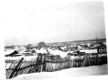 | Старые фотографии Бродокалмака с сайта газеты "Маяк" (Красноармейский район Челябинской области), страница посвященная Бродокалмаку: mayak-74.ru/raion/brodokalmakskoe |
| 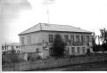 | |
| 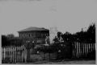 | |
| 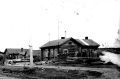 | |
| 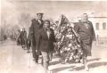 | |
| 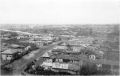 | |
| 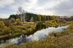 | Река Теча. Фотография с сайта gazeta.ru |
| 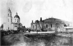 | Церковь св. Прокопия в Бродокалмаке. Фотография 1896г. с сайта sobory.ru |
| 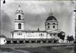 | Церковь св. Прокопия в Бродокалмаке. Фотография Меркурьева 1925г. с сайта sobory.ru |
| 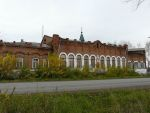 | Церковь св. Прокопия в Бродокалмаке. Фотография Василия Артамонова 2015г. с сайта sobory.ru |
Главная страница сайта
Последнее изменение страницы 15 Mar 2021
{kind=link}
{kind=link}
{kind=link}
{kind=link}
{kind=link}
{kind=link}
{kind=link}
{kind=link}
{kind=link}
{kind=link}
{kind=link}